扉页
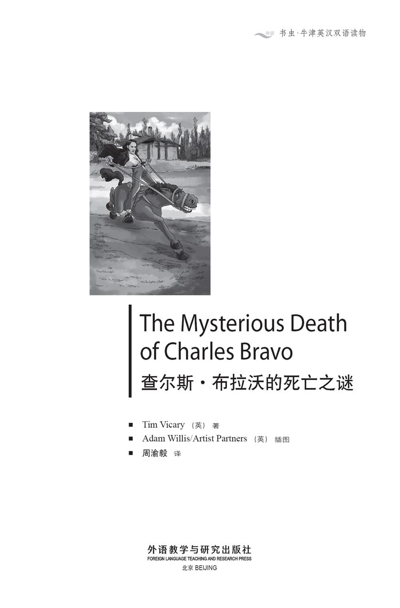
版权页
京权图字：01-2013-7832
Published by arrangement with Oxford University Press for sale in the People's Republic of China only and not for export therefrom. This edition is for sale in the mainland of China only, excluding Hong Kong SAR, Macao SAR and Taiwan.
© Oxford University Press 2011
Oxford is a registered trademark of Oxford University Press
图书在版编目（CIP）数据
查尔斯·布拉沃的死亡之谜：英汉对照／（英）维卡里（Vicary，T.）著；（英）威利斯（Willis，A.）绘；周渝毅译．—北京：外语教学与研究出版社，2014.2
（书虫·牛津英汉双语读物）
书名原文：The mysterious death of Charles Bravo
ISBN 978-7-5135-4073-5
Ⅰ．①查… Ⅱ．①维… ②威… ③周… Ⅲ．①英语—汉语—对照读物②长篇小说—英国—现代 Ⅳ．①H319.4：I
中国版本图书馆CIP数据核字（2014）第029040号
出版人 蔡剑峰
责任编辑 金 辉
执行编辑 张紫薇
封面设计 蔡 颖
出版发行 外语教学与研究出版社
社 址 北京市西三环北路19号（100089）
网 址 http://www.fltrp.com
版 次 2014年3月第1版
书 号 ISBN 978-7-5135-4073-5
凡侵权、盗版书籍线索，请联系我社法律事务部
举报电话：（010）88817519 电子邮箱：banquan@fltrp.com
法律顾问：立方律师事务所 刘旭东律师
中咨律师事务所 殷 斌律师
内容简介
内容简介
在19世纪的英格兰，维多利亚女王统治时期的妇女们日子过得很艰难。已婚妇女必须对丈夫言听计从，自己不能作任何决定。只有男人可以替她拿主意。如果她嫁得不好，丈夫对她拳脚相加，她也无可奈何。
弗洛伦丝·布拉沃年轻漂亮又富有，但她却时运不济，嫁的两任丈夫都不如意。她的第一任丈夫酗酒，还常常打她。她离他而去，找到了一位善良又温和的情人，但这位情人已是有妇之夫。后来她嫁给了查尔斯·布拉沃……
五个月后，查尔斯·布拉沃因锑中毒而死。是谁给他下的毒？是谁想要他的命？还是说这只是一场意外，根本就不是谋杀？
这是一个真实的故事，讲述了1876年发生的一桩凶案。这个案子非常出名。当时大小报纸对这个案子的报道铺天盖地，英格兰里人人都在谈论此案。但是，凶手却一直没有找到……
THE MYSTERIOUS DEATH OF CHARLES BRAVO
THE MYSTERIOUS DEATH OF CHARLES BRAVO
In England in the 1800s, during the time of Queen Victoria, women did not have an easy time. A married woman had to obey her husband in everything; she could not decide things for herself. Only a man could do that for her. And if she had a bad husband, who beat her, she could do nothing about it.
Florence Bravo was young, beautiful, and rich, but she was not lucky in her husbands. Her first husband drank too much, and beat her. She left him and took a lover, who was kind and gentle, but he was already married. Then she married Charles Bravo ...
Five months later, Charles Bravo was dead, killed by antimony poisoning. But who gave him the antimony? Who wanted him dead? Or was it an accident, and not murder at all?
This is a true story about a murder in 1876. It was a very famous case. The newspapers at the time were full of it, and everybody in England was talking about it. But no murderer was ever found ...
目录
PEOPLE IN THIS STORY
PEOPLE IN THIS STORY
Florence Bravo, wife of Charles Bravo;
previously, Florence Ricardo, wife of Alexander Ricardo Charles Bravo, second husband of Florence Bravo;
died April 1876
Joseph Bravo, stepfather of Charles Bravo
Alexander Ricardo, first husband of Florence Bravo;
died April 1871
Dr James Gully, famous doctor, and lover of Florence Bravo
Mrs Jane Cox, friend and companion of Florence Bravo
George Griffiths, Florence Bravo's coachman
Mary Ann Keeber, Florence Bravo's maidservant
Doctors who saw Charles Bravo during his illness:
Dr Harrison, a doctor from Streatham
Dr Moore, a doctor from Balham
Dr Royes Bell, a doctor and cousin to Charles Bravo
Dr George Johnson, a well-known London doctor, and a friend of Royes Bell
Dr William Gull, doctor to Queen Victoria, and the most famous doctor in England at that time
人物介绍
人物介绍
弗洛伦丝·布拉沃，查尔斯·布拉沃的妻子；前为弗洛伦丝·里卡多，亚历山大·里卡多的妻子
查尔斯·布拉沃，弗洛伦丝·布拉沃的第二任丈夫，1876年4月去世
约瑟夫·布拉沃，查尔斯·布拉沃的继父
亚历山大·里卡多，弗洛伦丝·布拉沃的第一任丈夫，1871年4月去世
詹姆斯·格利医生，著名医生，弗洛伦丝·布拉沃的情人
简·考克斯太太，弗洛伦丝·布拉沃的朋友兼陪护
乔治·格里菲思，弗洛伦丝·布拉沃的马车夫
玛丽·安·基伯，弗洛伦丝·布拉沃的女仆
查尔斯·布拉沃生病期间前去诊治的医生：
哈里森医生，来自斯特雷特姆
穆尔医生，来自巴勒姆
罗伊斯·贝尔医生，查尔斯·布拉沃的堂兄
乔治·约翰逊医生，伦敦著名医生，罗伊斯·贝尔的朋友
威廉·古尔医生，维多利亚女王的御医，当时英格兰最著名的医生
1．A true story
1
A true story
This is a true story. But although it is true, no one knows exactly what happened. That's why it is so interesting.
On Friday 21st April 1876 a young lawyer, Charles Bravo, died at his home in Balham, which at that time was a village just south of London.
But why did Charles Bravo die? Did he kill himself? Was he murdered? Or was his death just a terrible accident?
At first, the doctors thought Mr Bravo had killed himself. But then his family started asking questions. 'I met him on Tuesday afternoon,' said his cousin, Dr Royes Bell. 'He was healthy and happy then. I want to know what happened.'
'I'm sure Charles didn't kill himself,' said his stepfather, Joseph Bravo. 'He was a strong, brave young man. I think he was murdered.'
Charles Bravo was killed by a poison, antimony. But how did the poison get into his body? Did he take it himself, or did someone give it to him? If so, how? And where did the antimony come from?
During July and August 1876, the London Coroner held an enquiry to answer these questions. At the enquiry, the police told their story, and so did Charles Bravo's friends, and the servants in his house. Famous lawyers asked questions. All over England, people read the story in their morning newspapers.
'Who killed Charles Bravo?' they asked. 'Or did he kill himself?'
The longest newspaper stories were about three people: Charles's wife, Florence; Florence's friend, Jane Cox; and Florence's lover, Dr James Gully.
These three people told their stories, but there are differences between the stories. So were they all telling the truth – or only some of the truth? And if one of them told a few lies, which one was it? And why did he or she lie?
What really happened to Charles Bravo?
Here are the three most important stories. First, Charles's wife, Florence ...
stepfather n. a man who has married your mother but is not your father 继父
poison n. something that can kill you or make you very ill if you eat or drink it 毒药，毒物
antimony n. a poisonous chemical used in the past as a medicine 锑
enquiry n. an official meeting to find out the truth about something 研讯会
一个真实的故事
1
一个真实的故事
这是一个真实的故事。不过虽然真实，却没有人知道到底发生了什么。这就是人们对它如此感兴趣的原因。
1876年4月21日，星期五，一位年轻的律师，查尔斯·布拉沃，在他巴勒姆的家中死亡。当时的巴勒姆还只是伦敦南面的一个小村子。
但是查尔斯·布拉沃的死因是什么？是自杀吗？还是他杀？又或者说他的死亡只是一场可怕的意外？
一开始，医生们认为布拉沃先生是自杀，但他的家人提出了质疑。“我周二下午还见过他。”他的堂兄罗伊斯·贝尔医生说，“他当时挺健康的，心情也不错。我想知道后来发生了什么事。”
“我敢肯定查尔斯不是自杀。”他的继父约瑟夫·布拉沃说，“他是个坚强勇敢的年轻人。我认为他是被别人害死的。”
查尔斯·布拉沃是锑中毒身亡的。但他是如何中的毒？是他自己吃下去的，还是别人给他吃的？如果是别人给他吃的，那又是怎么让他吃下去的？锑又是从哪里来的？
1876年七八月间，伦敦的验尸官针对这些问题举行了研讯会。在研讯会上，警方讲述了他们所掌握的情况，查尔斯·布拉沃的朋友及家里的仆人也讲述了各自了解的情况。著名律师们进行了提问。全英格兰的人都在早报上读到了相关报道。
“谁是杀害查尔斯·布拉沃的凶手？”人们问道，“还是说他是自杀的？”
报纸上登载的篇幅最长的报道涉及下面三个人：查尔斯的妻子弗洛伦丝、弗洛伦丝的朋友简·考克斯，以及弗洛伦丝的情人詹姆斯·格利医生。
这三个人都有自己的说法，但他们的说法也不完全相同。那么他们都说实话了吗？还是只说了部分实话？如果其中一个说了些假话，那么是谁在撒谎？他或她为什么要撒谎？
查尔斯·布拉沃到底出了什么事？
下面就是这最重要的三种说法。首先听听查尔斯的妻子弗洛伦丝的说法……
2．Florence Bravo's story—PART 1
2
Florence Bravo's story
PART 1
My name is Mrs Florence Bravo. I am 31 years old. I live at The Priory, in Balham. At the time of his death, my husband, Charles Bravo, lived there too. My friend and companion, Jane Cox, was also living in the house ...
My husband Charles and I were very happy together. Of course, we argued sometimes, but that's normal, isn't it? All husbands and wives argue sometimes. But Charles was a good man – a lawyer – and I loved him very much. He loved me too – everyone will tell you that. In fact, that was the last thing he said, before he died. 'You've been the best of wives,' he said. Then I kissed him, and he died.
Charles Bravo was my second husband. I married him at the end of last year, December 1875. My first husband, Alexander Ricardo, died in 1871. I was only nineteen when I married Alexander. He was a soldier in the British army. He looked very tall and handsome in his red coat.
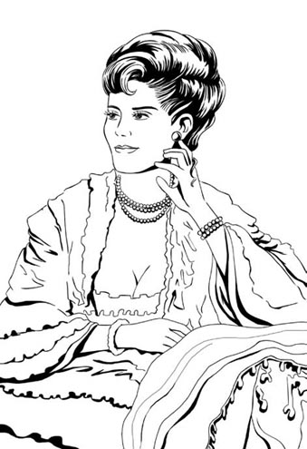
Florence Ricardo – later, Florence Bravo
Both our families were very rich, and my parents liked him. All the most important people in London came to our wedding – it was wonderful! We danced late into the night. He was the most beautiful man I had ever seen. I fell in love with him, and I thought he loved me too.
But I was wrong. Alexander was a terrible husband. He didn't love me; he spent most of his time visiting girls and drinking. He drank two or three bottles of wine every night. Sometimes, when he came home, he couldn't stand up. And when I argued with him, he hit me.
That's right – my tall beautiful soldier husband hit me! One day he hit me hard, in the face, three times. Then he laughed.
I left him then and ran home, to my parents. 'I can't live with this man,' I told them. 'He's stupid and dangerous. I don't want to be married any more!'
'But Alexander is your husband,' my father said. 'A wife can't leave her husband. It's against the law. You must go back to him and do what he says.'
'No!' I screamed. 'I can't, I won't! You don't understand! I don't want to see him again, ever! I wish he was dead!'
I cried so much that my parents thought I was ill. So my mother took me to a doctor, Dr James Gully.
I'll never forget that day. We arrived at Dr Gully's hospital in Malvern after a long journey. I was very tired, frightened, and unhappy. Dr Gully was a man, of course. But he didn't shout at me, like my father and my husband. He just looked at me, and listened. He was quiet and friendly and kind. In fact, I thought he was the kindest man I had ever met.
He was the only man who really liked me and understood me. But after a while, I saw that it was more than that. Dr Gully didn't just like me and understand me. He fell in love with me, too.
He can tell you about that.
companion n. a person (often a woman) whose job is to live with and help somebody 陪护（指受雇的职业伴侣，常为女性）
handsome adj. good-looking (usually of a boy or man) 英俊的
弗洛伦丝·布拉沃的讲述——第一部分
2
弗洛伦丝·布拉沃的讲述
第一部分
我是弗洛伦丝·布拉沃夫人，今年31岁。我住在巴勒姆的普里奥里。我丈夫查尔斯·布拉沃去世时也住在那儿。我的朋友兼陪护简·考克斯当时也和我们住在一起……
我和丈夫查尔斯生活得非常幸福。当然，我们有时也会吵架，但这太正常不过了，是不是？哪有夫妻不吵架的呀？但查尔斯人很不错，是一名律师，我非常爱他。他也爱我——这一点大家都知道。事实上，他临死前的最后一句话就是这么说的。“你是天底下最好的妻子。”他说。然后我亲吻了他，他就闭上了眼睛。
查尔斯·布拉沃是我的第二任丈夫。我是去年年底，也就是1875年12月和他结婚的。我的第一任丈夫亚历山大·里卡多是1871年去世的。我和亚历山大结婚时只有19岁。他当时在英国军队服役。亚历山大个子高高的，穿红军装非常帅。
我们两家家境都很好，我父母也喜欢他。伦敦所有的头面人物都参加了我们的婚礼——一场盛大华美的婚礼！我们跳舞跳到深夜。他是我见过的最英俊的男子。我爱上了他，以为他也爱我。
但是我错了，亚历山大是个很糟糕的丈夫。他并不爱我，他大多数时间都在寻花问柳，饮酒作乐。他每天晚上都要喝上两三瓶酒，有时回到家都站不起来了。我一跟他理论，他就打我。
没错——我那高大英俊的军人丈夫打我！有一天，他狠狠地打了我的脸三次，然后他还笑。
之后我就离开他，跑回了娘家。“我没法跟这个男的过了。”我跟我爸妈说，“他是个危险的蠢货。我不想再维持这场婚姻了！”
“但亚历山大是你的丈夫。”我爸爸说，“做妻子的不能离开丈夫。这是违法的。你必须回到他身边，照他说的办。”
“不！”我尖叫道，“我不能回去，我也不会回去！你们根本不理解！我不想再见到他，永远也不见！我希望他死掉！”
我哭得稀里哗啦，以至于我爸妈以为我病了。于是妈妈带我去看医生，詹姆斯·格利医生。
我永远也不会忘记那一天。在长途跋涉之后，我们来到了格利医生那家位于莫尔文的医院。我又累又怕，闷闷不乐。当然，格利医生是位男性。但他并未对我大喊大叫，不像我爸爸和我丈夫。他只是看着我，倾听我的诉说。他话不多，友好而体贴。实际上，我认为他是我见过的最体贴的男人。
他是唯一真心喜欢我、理解我的男人。但是不久之后，我发现事情不止如此。格利医生不只是喜欢我、理解我，他还爱上了我。
你们可以听听他是怎么说的。
3．Dr James Gully's story—PART 1
3
Dr James Gully's story
PART 1
My name is Dr James Gully. I am 68 years old. I live at Orwell Lodge, in Balham. In January 1871 I was living in Malvern, near W ales. That's where I first met Florence – Florence Ricardo, as she was called then ...
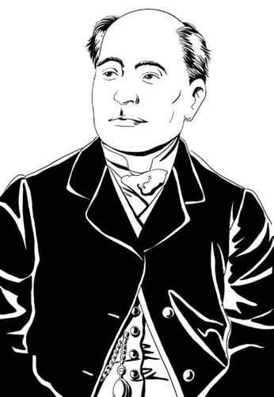
Dr James Gully
I remember the day when I first met Florence. It was a cold January morning. There was snow on the hills, but the sun was shining. Florence's mother brought her to my hospital in Malvern. Florence was not ill, but she was very unhappy. She had run away from her husband, Alexander Ricardo. Her father had told her to go back to him.
'But I won't go!' she said. 'I'm never going back to him, never!'
I looked at her carefully. She was crying, and there was a dark bruise on her face. She was a young woman, twenty-five years old, and she had been married for six years.
'Does your husband hit you, my dear?' I asked.
'Yes, he does. He often hits me. I hate him!'
'But you're his wife, Florence,' her mother said. 'So you have to live with him. That's what wives do.'
'No!' Florence screamed at her mother. 'You don't understand. When he's drunk, he's dangerous, he hurts me! I'll kill myself if you make me go back!'
She got up and hit her hand against the window.
'This young woman is ill,' I told her mother. 'She needs a quiet, safe place where she can rest and be calm. We have a small house in the hospital gardens. She can stay there until she is better.'
So Florence stayed, and I visited her every day. We walked in the hospital gardens, and she told me about her husband, Alexander.
'I was just a young girl when I married him,' she said. 'I didn't understand anything. It doesn't matter what a man looks like – what matters is how he behaves.'
'And how does Alexander behave?' I asked.
'Well, he left the army after we married,' she said. 'And that made him unhappy. He doesn't know what to do all day. We live in a big country house – Gatcombe Park – but he is always in London with his friends. He sees other women too, I think. When he comes home, he drinks. Two or three bottles of wine every day.'
'Don't you try to stop him?' I asked.
'Of course I do. I try. Once or twice I've put a little antimony in his wine, to make it taste bad. It made him sick, but he didn't stop drinking.'
I'd heard of this before. Antimony is a dangerous poison – it can kill you, if you take a lot. But some wives put a little of it in their husband's wine. It makes the man feel sick, so he doesn't drink so much. Some men do that to their wives, too. I think it's a bad idea.
There were tears in her eyes. 'When he's drunk, he hits me. Don't send me back to him, Dr Gully! Please don't send me back!'
'Of course I won't, my dear,' I said quietly. 'Don't worry. No woman should live with a man like that.'
But Florence was afraid that her husband Alexander would make her come home. At that time, there were very strong laws about how women must behave. Most men liked these laws, but I didn't. I thought the law was unfair to women. The law said that a married woman couldn't decide things for herself. She needed a man – a guardian – to decide things for her. Usually, this guardian was her husband or her father. But sometimes a friend could become a woman's guardian.
'If you want to leave your husband,' I said, 'I will help you. In law, I can become your guardian. I will tell my lawyers to start preparing the necessary papers now. Then your husband cannot order you to go home. And your father cannot tell you what to do either. Would you like that? Will that make you feel safe?'
'Oh yes, please, Dr Gully,' she said. 'Will you do that for me? Can you write to your lawyers today?'
I smiled. 'It will be a pleasure, my dear.'
My lawyers began work immediately. Florence's husband, Alexander, was very angry, but he could not stop me.
Florence continued to live in Malvern, and I talked to her every day. She was a beautiful, intelligent young woman, and she liked my hospital. My hospital was different to other hospitals. I gave sick people baths of cold and hot water, good healthy food, rest and quiet – and it worked! I told her about the famous people who visited me – Charles Darwin, Charles Dickens, Florence Nightingale. She liked stories like that. As time passed she began to look healthier. She began to talk happily. Sometimes she even smiled.
She had a beautiful smile. In fact she was a very beautiful young woman. The most beautiful, interesting young woman I have ever met.
I told her about my family. I was sixty-three years old then. I had a son who was ten years older than Florence, and a small granddaughter. But my wife lived in a hospital in Yorkshire. She was eighty years old, and her mind had gone; she didn't recognize me or my son. So really, I didn't have a wife any more.
When my lawyers finished their work, Florence became separated in law from her husband Alexander Ricardo, and I became her guardian.
'Can I go on living here?' she asked me.
'You can stay here as long as you like,' I said. 'But you're a free woman now. I won't tell you what to do.'
She laughed, and took my hand. 'Oh yes, James, of course. You're so kind. I'm so grateful to you.'
That was the first time she called me James, and it felt – wonderful! I wanted to take her in my arms and dance! Of course I didn't – she was only twenty-five, and I was sixty-three, but ... a man can still fall in love, even when he is old.
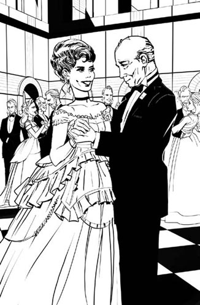
I wanted to take her in my arms and dance.
And love hurts when you are old, just as much as it does when you are young. More, perhaps, because when you are old you have so little time left.
In April 1871 Alexander Ricardo died. He had already been ill, and after Florence left him, he drank more and more every day, and was often sick. In the end alcohol destroyed his stomach.
When he died, Florence, his widow, became a very rich lady. All her husband's money was hers. But her father wasn't her guardian. I was. Later that year, she came on holiday with me to Germany.
It was the most wonderful holiday of my life. We stayed in a town called Kissingen, in Bavaria. We walked in the hills and gardens, looking at the beautiful clean rivers. We went to restaurants and the theatre, two happy people together.
We lived together like husband and wife. In fact, some people in the hotel thought she was my wife. We laughed and talked all day. I'm sure it was easy to see that I was in love with her.
I couldn't stop looking at her and thinking about her. Everything I did, everything I thought or wrote or said, was for her.
So what about her? Was she in love with me?
I thought she was. She looked wonderful, she laughed and sang as we walked through the town together. We danced for hours in the evening; she was strong and healthy – stronger than me. She talked to me all the time, she called me 'her famous doctor'. I thought she was happy to be with me, to spend all day and all night together.
Isn't that love?
bruise n. a dark mark on the skin that comes after something hits it 瘀伤，青肿
behave v. to do and say things in a certain way 表现，为人
guardian n. a person who is responsible in law for somebody else, e.g. a child or (at the time of this story) a woman 监护人
widow n. a woman whose husband has died 寡妇
詹姆斯·格利医生的讲述——第一部分
3
詹姆斯·格利医生的讲述
第一部分
我是詹姆斯·格利医生，今年68岁。我住在巴勒姆的奥韦尔洛奇。1871年1月，我住在威尔士附近的莫尔文。那是我第一次见到弗洛伦丝的地方—她当时叫弗洛伦丝·里卡多……
我还记得第一次见到弗洛伦丝那天的情形。那是一月份一个寒冷的早晨。山上还覆盖着白雪，但那天阳光明媚。弗洛伦丝的妈妈把她带到了我在莫尔文的医院。弗洛伦丝当时并没有生病，但她非常不开心。她刚离开丈夫亚历山大·里卡多，可她父亲又让她回到丈夫身边去。
“但是我不会回去！”她说，“我永远都不要回到他身边，永远都不！”
我仔细地看了看她。她正哭着，脸上还有一道深色的瘀青。她很年轻，才25岁，但已结婚6年了。
“你丈夫打你吗，亲爱的？”我问。
“是的，他打我。他经常打我。我恨他！”
“但你是他妻子，弗洛伦丝。”她母亲说，“所以你必须得跟他一起生活。这是做妻子的本分。”
“不！”弗洛伦丝冲她母亲尖叫道，“你不懂。他这个人喝醉时非常危险，他会伤害我！如果你逼我回去，我就自杀！”
她站起身，用手拍窗户。
“这位年轻女士病了。”我跟她母亲说，“她需要一个安静、安全的地方休息静养。我们医院的花园里有一幢小房子，她可以一直呆在那儿，直到病情有所好转。”
就这样，弗洛伦丝住了下来，我每天都去看她。我们在医院的花园里散步，她给我讲她丈夫亚历山大的事。
“我嫁给他时还只是个小姑娘，”她说，“什么也不懂。其实男人的长相并不重要——重要的是他的为人。”
“那亚历山大为人如何呢？”我问。
“嗯，婚后他就退伍了。”她说，“这让他很不高兴。他整天无所事事。我们住在乡下一所大宅子里，就是加特库姆庄园，但他总是呆在伦敦，和朋友在一起。我想他还和别的女人约会。他一回家就喝酒。每天都要喝上两三瓶。”
“你没有想过制止他吗？”我问。
“当然想过，我也试着去制止他。有一两次我在他的酒里放了点儿锑，这样酒的味道就不是那么好。结果他吐了，但他还是没戒酒。”
我以前听说过这样的事。锑是一种危险的有毒物质——如果大量服用，会致人死亡。但有些妻子会放一点儿在她们丈夫的酒里，这会让丈夫觉得恶心，这样他们就不会喝太多酒。一些男的也会对爱喝酒的妻子做同样的事。我觉得这么做不好。
“他喝醉后就打我。别把我送回他身边，格利医生！求您别把我送回去！”她双眼含泪地说。
“当然不会，亲爱的。”我轻声说，“别担心。女人就不应该和他那样的男人生活在一起。”
但是，弗洛伦丝担心丈夫亚历山大会逼她回家。当时，法律对妇女的行为有很严格的规定。大多数男人都喜欢这些法律，但我不喜欢。我认为法律对女性不公平。法律规定，已婚妇女无自主决定的权利。她需要一位男性——一位监护人——替她作决定。通常，这位监护人是她的丈夫或父亲，但有时朋友也可以成为妇女的监护人。
“如果你想离开你丈夫，”我说，“我可以帮你。从法律上说，我可以成为你的监护人。我现在就可以让我的律师准备相关文件。这样你丈夫就不能命令你回家，你父亲也不能对你的事指手画脚。你同意这么做吗？这么做会让你安心吗？”
“哦，是的，求您这么做吧，格利医生。”她说，“您愿意为我那么做吗？您能不能今天就写信告诉您的律师？”
我笑了。“非常愿意为你效劳，亲爱的。”
我的几位律师立刻着手准备相关文件。弗洛伦丝的丈夫亚历山大非常生气，但他无法阻止我。
弗洛伦丝继续住在莫尔文，我每天都和她聊天。她是个美丽、聪慧的年轻女子，而且她很喜欢我的医院。我的医院不同于其他医院。我给病人提供冷热水浴、健康营养的食物、适于休息的安静环境——收效不错！我跟弗洛伦丝聊来访过的名人——查尔斯·达尔文，查尔斯·狄更斯，弗洛伦丝·南丁格尔。她喜欢听那些事。时间一天天过去，她的气色开始好起来了。她聊天时的心情变得挺不错。有时她甚至会展颜一笑。
她的笑容很美。事实上，她是个非常漂亮的年轻女子，是我见过的最漂亮、最有意思的年轻女子。
我跟她讲了我的家庭。我那时63岁，有一个大弗洛伦丝10岁的儿子，一个小孙女。但我的妻子住在约克郡的一家医院里。她80岁了，已经糊涂了，既认不出我，也认不出儿子。所以，我实际上算是没有妻子了。
我的律师们完成他们的工作后，弗洛伦丝在法律上和她的丈夫亚历山大·里卡多分居了，而我成了她的监护人。
“我能继续住在这里吗？”她问我。
“你想在这里住多久就住多久。”我说，“但你现在自由了，我不会干涉你的生活。”
她笑了，拉住我的手说：“噢，对，詹姆斯，当然。你人太好了。我对你感激不尽。”
那是她第一次叫我詹姆斯，那种感觉——美妙极了！我想即刻揽她入怀，跳上一曲！当然我没有那么做——她才25岁，而我已经63岁了，但是……男人即便已年迈，依然可能坠入情网。
爱情会伤人，对年轻人的伤害有多深，对老年人的伤害就会有多深。也许更深，因为老年人的时间所剩无几。
1871年4月，亚历山大·里卡多去世了。他之前一直有病，弗洛伦丝离开他后，他酒喝得越来越多，经常生病。最后，酒精毁了他的胃。
他去世后，弗洛伦丝，他的遗孀，变得非常富有。丈夫的钱财都归她所有。但她父亲并不是她的监护人，我是。那年下半年，她和我去德国度假。
那是我一生中最美妙的一次度假。我们去了巴伐利亚州一个叫基辛根的小镇。我们徜徉在山林里，漫步在花园中，欣赏美丽清澈的河流。我们上饭店吃饭，去剧院看戏，真是幸福的一对。
我们像夫妻一样出双入对。事实上，旅馆里的一些人以为她就是我妻子。我们整天欢声笑语的，有说不完的话。我肯定，大家都能轻易看出我爱上了她。
我停止不了自己看她、想她。我的所做、所思、所写、所言，全都是为了她。
那么她是怎么想的呢？她爱我吗？
我认为她也爱我。我们一起在镇上散步时，弗洛伦丝神采奕奕，笑口常开，还会哼唱歌曲。晚上，我们会跳上几个小时的舞。弗洛伦丝很健康，也很强壮——比我强壮。她跟我有说不完的话，她管我叫“我的名医”。我觉得她和我在一起时很开心，她愿意日日夜夜和我在一起。
难道这不是爱情？
4．Florence Bravo's story—PART 2
4
Florence Bravo's story
PART 2
My name is Mrs Florence Bravo. I am 31 years old. I live at The Priory, in Balham. At the time of his death, my husband, Charles Bravo, lived there too. My friend and companion, Jane Cox, was also living in the house ...
I liked Dr Gully a lot. He was the most intelligent man I had ever met. He told me interesting things, and he made me laugh. He was also very kind – much kinder than my husband Alexander, or my father.
I was very happy on that holiday in Germany. We went everywhere together; we talked and laughed all day, and sang and danced in the evening. For a short time, I thought I was in love with him. But of course he was much, much older than me. Some people in the hotel thought he was my grandfather. Some of them smiled at us, but others looked at us angrily . We slept together in the same bedroom, but we were not married. Most people thought that was very wrong.
One evening, he asked me to marry him. I was surprised. It was impossible, of course. I didn't know what to say. I smiled and touched his face.
'James, that's a lovely idea,' I said. 'But we can't marry, can we? You have a wife.'
'Yes, I know,' he said. 'But she's old and ill; she won't live long. Will you wait for me, Florence? Please? We can marry when she's dead.'
I walked away from him, slowly. I don't want to make him unhappy, I thought, but ... what will people say if I marry a man more than twice as old as me?
'It's very difficult, James,' I said. 'My parents won't talk to me because of you. They say I need a husband of my own age. Perhaps they're right. We are good friends – isn't that enough?'
He held my hands and looked into my eyes. I could see he was hurt.
'You should marry the man you love,' he said. 'That's the right thing to do. Any other kind of marriage will be a lie – a terrible mistake.'
I looked up at him. 'Yes, James, I know. Don't worry – I don't want another husband like Alexander. Let me think about this, will you? It's not easy to decide.'
When we came back to England, I bought a large house called The Priory. It was in a village called Balham, near London. Dr Gully left his hospital in Malvern and bought a house called Orwell Lodge, just five minutes' walk away from my house. We met nearly every day – I had a key to his house, and he had a key to mine. We went for walks and rides in the countryside around Balham. We were still friends. It was almost as good as in Germany.
Almost, but not quite. I was young – I wanted friends of my own age. But I couldn't make new friends because Dr Gully was always there. People knew we weren't married, so they didn't want to know us. Often, married women walked past me in the street, with their noses in the air. They knew me very well, but they refused to speak to me or even look at me. To them, I was just something dirty in the street.
That made me miserable and angry. It was so unfair: no one was unkind to Dr Gully, because he was a man! Men – even married men – can do what they like. But if a woman does something wrong, then no one will speak to her.
I needed a woman friend – someone I could talk to about women's things, when James was not there. I put an advertisement for a 'lady companion' in a newspaper, and a woman called Jane Cox answered it.
I liked Jane. She was a widow, and she needed money to send her three children to school. So I gave her the job, and she came to live with me. We became friends. We talked, all the time, and went shopping together.
I'm not sure if Dr Gully liked Jane. He was very polite to her, but sometimes, I think, he wished she was not there. He wanted to be my only friend.
But that's why I needed Jane. I needed a woman to talk to about Dr Gully . He was kind, and clever, but he was so much older than me. I was lonely, and worried. I didn't know what to do.
And then one day I fell ill. I was in bed for several weeks. My companion, Jane Cox, looked after me. I talked to her a lot. She liked Dr Gully, but she didn't want me to marry him.
'His wife may live for ten more years,' she said. 'Anyway, you need a younger man.'
'It's easy to say that, Jane,' I said. 'But where can I find a young man who is as clever and kind as James Gully?'
'I think I know someone,' Jane said.
'Really, Jane?' I asked. 'Who?'
Jane smiled. 'I know a family called Bravo. I met them in Jamaica. They have a son called Charles. I think you'll like him.'
advertisement n. a notice (e.g. in a newspaper) which tells people about jobs, things to sell etc 广告，启事
弗洛伦丝·布拉沃的讲述——第二部分
4
弗洛伦丝·布拉沃的讲述
第二部分
我是弗洛伦丝·布拉沃夫人，今年31岁。我住在巴勒姆的普里奥里。我丈夫查尔斯·布拉沃去世时也住在那儿。我的朋友兼陪护简·考克斯当时也和我们住在一起……
我非常喜欢格利医生。他是我见过的最聪明的男子。他给我讲有趣的事，逗得我哈哈笑。他人也非常好——比我丈夫亚历山大和我父亲都好多了。
在德国度假的那段时间，我过得很愉快。我们形影不离，整天有说有笑的，晚上还唱歌跳舞。有那么短短的一段时间，我以为我爱上了他。当然，他年纪比我大很多很多。旅馆里的一些人以为他是我祖父。他们有的人对我们笑脸相迎，有的人则对我们怒目相向。我们睡在同一间卧室里，但我们并没有结婚。大部分人认为这么做是很伤风化的。
一天晚上，格利医生向我求婚。我很惊讶。那当然是不可能的事。我不知道该说什么。我笑了笑，抚摸了一下他的脸。
“詹姆斯，这个主意不错。”我说，“但是我们不能结婚，不是吗？你有妻子。”
“是，我知道。”他说，“但是她一大把年纪了，而且还有病，她活不了多长时间了。你愿意等我吗，弗洛伦丝？求你了！她死后我们就可以结婚了。”
我缓缓地走向别处。我不想惹他不高兴，我想，但是……如果我嫁给一个年纪是我的两倍还多的男人，人们会怎么说呢？
“这很难，詹姆斯。”我说，“因为你，我父母都不愿意跟我说话了。他们说我需要嫁一个和我年纪相仿的人。也许他们是对的。我们是好朋友——难道这还不够吗？”
他握住我的双手，凝望着我的眼睛。我能看出他受到了伤害。
“你应该嫁一个你爱的人。”他说，“这才是正确的做法。其他任何形式的婚姻都是谎言——是天大的错误。”
我抬头看着他。“是的，詹姆斯，我知道。别担心——我不会再找一个亚历山大那样的丈夫。让我想想这事儿，好吗？这个决定可不好作。”
我们回到英格兰后，我买了一所名叫普里奥里的大房子，就在伦敦附近的巴勒姆村里。格利医生离开了他在莫尔文的医院，买了一座名叫奥韦尔洛奇的房子，离我家步行只需要五分钟。我们几乎天天见面——我有他房子的钥匙，他也有我房子的钥匙。我们在巴勒姆附近的乡间散步、骑马。我们依然是朋友，几乎就跟在德国时一样好。
我说的是几乎，而不是非常。我还年轻——我需要和我年纪差不多的朋友。但是我结交不了新朋友，因为格利医生总是和我在一起。人们都知道我们并不是夫妻，所以他们不想结识我们。已婚妇女在街上遇到我时，对我常常是一副不屑一顾的样子。她们很清楚我是谁，但她们不愿跟我说话，甚至瞧都不瞧我一眼。对于她们来说，我就像是大街上的脏东西。
这让我感觉很痛苦，也很生气。这不公平：没有人对格利医生这样，就因为他是个男的！男人——甚至是已婚男人，能想干什么就干什么。但是一旦女人做错了什么事，就没有人愿意理她。
我需要一个女性朋友——一个当詹姆斯不在的时候，可以和我说说女人的事的人。我在一家报纸上登了一则广告，寻找“女性陪护”，有一个名叫简·考克斯的女子前来应征。
我喜欢简。她是一个寡妇，需要钱来支付三个孩子的学费。于是，我给了她这份工作，她搬过来和我住在一起。我们成了朋友。我们在一起聊个没完，还一起去逛街。
我不能确定格利医生是否喜欢简。他对简彬彬有礼，但有时，我想他倒是希望简不在家里。格利医生想成为我唯一的朋友。
但这也正是我需要简的原因。我需要一个可以和我谈谈格利医生的女性朋友。格利医生人很好，也聪明，但他比我大太多了。我很孤独，也很着急。我不知道该怎么办。
后来有一天，我生病了，卧病在床好几个星期。我的陪护简·考克斯照顾我。我跟她谈了好多事儿。她喜欢格利医生，但她并不想看到我嫁给他。
“他的妻子可能还会再活上十年。”她说，“不管怎么说，你应该找一个年轻点儿的男人。”
“说起来容易，简。”我说，“可我上哪儿找像詹姆斯·格利那样人又好又聪明的年轻男子呢？”
“我想我倒是认识一个。”简说。
“真的吗，简？”我问道，“是谁呀？”
简笑了。“我认识一家姓布拉沃的人家。我是在牙买加认识他们的。他们家有一个儿子叫查尔斯，我想你会喜欢他的。”
5．Dr James Gully's story—PART 2
5
Dr James Gully's story
PART 2
My name is Dr James Gully. I am 68 years old. I live at Orwell Lodge, in Balham. In January 1871 I was living in Malvern, near W ales. That's where I first met Florence – Florence Ricardo, as she was called then ...
It was that man, Charles Bravo, who caused all the trouble. Everything was fine before that. I saw Florence every day, we went for walks and rides around Balham together. We were very happy. But then ...
One day, a few weeks after Florence had been ill, I came to her house as usual. Her companion, Jane Cox, met me at the door. 'I'm sorry, Dr Gully, but Florence isn't at home.'
I was surprised, and hurt. This had never happened before. 'Where has she gone?'
'She is visiting a family called Bravo. They are businessmen and lawyers, I think, from Jamaica.'
Without me, I thought sadly. 'Well, tell her I called, will you? I hope to see her tomorrow.'
The next time I saw Florence, she was a different woman. She seemed happy and excited, but worried too. She didn't look me in the eyes. I asked her to have dinner with me in the evening.
'Oh, I'm sorry, James,' she said. 'But I can't. I'm going to the theatre with someone.'
'Someone?' I asked. 'Who?'
'Charles Bravo. I met him the other day.'
'Oh, I see. What's he like, this Charles Bravo?'
She looked away from me to hide the excitement in her eyes. But there was a smile on her face – she couldn't hide that. 'Oh, very polite and friendly. He's an interesting man – a lawyer. He's quite handsome, and funny, too. You'll like him, I expect.'
I felt a sudden terrible pain in my chest. It was difficult to breathe. I knew – I knew then that I had lost her. 'How old is he?' I asked.
'Quite young – like me. James, are you all right?'
'It's my chest. I'll have to sit down. I'll be all right in a few minutes.'
She sat down beside me, but she didn't look at me, even then. And I wasn't all right – not in a few minutes, or a few hours or a few days. I was never all right again. I had lost her to a younger man, and there was nothing I could do to change it.
I met Charles Bravo a few weeks later. He was walking in the village with Florence on his arm – as I used to walk with her. She was right; he was handsome, and young. But he wasn't polite or friendly, not to me. He looked at me as a man looks at an enemy. He smiled coldly.
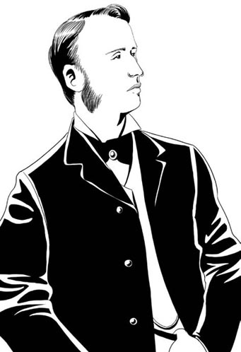
Charles Bravo
'Florence has agreed to marry me, Doctor Gully,' he said. 'She will soon be Mrs Charles Bravo.'
'Congratulations,' I said. But my voice sounded strange, and I had that terrible pain in my chest. 'I hope you will be very happy.'
'Oh, we will, Doctor Gully, we will,' he said, with that cold smile on his face. 'I expect you were happy too, when you married your wife, all those long years ago. Is Mrs Gully well?'
From his words, from the look on his face, it was clear that Florence had told him all about me, and about the love there had been between us. All during this conversation Florence stayed close to his side and looked down at the ground. Not once did she lift her eyes to my face.
'My wife is ... in a hospital in Yorkshire,' I said. 'She is an old, sad woman.'
'But still alive, I hope, Dr Gully?' he said, as I turned and walked quickly away. 'Your wife is still alive, I hope, and in good health?'
I hated him then, and I have hated him ever since. I continued to live at my house in Balham – where else could I go? – and in December 1875 I saw Florence go to her wedding with that man. She looked more beautiful than ever. She drove past my house on the way to the church. But she didn't look at me, not once. Not on her wedding day, not in all the weeks afterwards. If I passed her in the street, she looked away, or talked to her friend, Jane Cox. I felt like a dead man, a ghost.
Then one day in March I met Mrs Cox on a train to London. She asked me for some medicine for her mother in Jamaica. I promised to send it to her.
'How is Florence?' I asked. 'Is she happy?'
Jane Cox shook her head sadly. 'Not really, no. She was ill in bed last week.'
'I'm sorry to hear it,' I said. 'But what about her husband, Charles. Is he kind to her?'
'That man?' Mrs Cox said angrily. 'He doesn't know how to be kind to a woman. Everything he does makes her unhappy. She argued with him last Tuesday, and he hit her.'
'He hit her?' I was so angry, my hands began to shake. 'You mean, he hit Florence, after she had been ill?' 'Yes,' Jane Cox said. 'It's not a happy marriage, Dr Gully. He is only interested in one thing – her money.'
I was sad and very angry, but there was nothing that I could do to help. I wasn't her guardian any more. Florence had chosen to leave me, and marry Charles Bravo. If her marriage was unhappy, that was her problem, not mine. Perhaps she hated her young husband, I don't know. But I can't believe she killed him. She's too sweet, too kind, too beautiful to do anything like that.
Some people think I killed Charles Bravo, but I didn't. I'm a doctor – my job is to make people well, not to kill them. And when did I kill him? How did I kill him? It was impossible for me to do it. I never entered Florence's house after she married Charles Bravo.
Maybe he killed himself. I don't know and I don't care. The world is a better place without him.
Jane Cox was the only friend that Florence had in that house. She tried to help Florence, I think.
Maybe she can tell you what happened.
expect v. to think or believe that something will happen 预料，预计
chest n. the front part of the top of the body 胸部，胸口
breathe v. to take in or send out air through your nose and mouth 呼吸
congratulations exclam. said to someone when you are happy about their good luck or success 恭喜
詹姆斯·格利医生的讲述——第二部分
5
詹姆斯·格利医生的讲述
第二部分
我是詹姆斯·格利医生，今年68岁。我住在巴勒姆的奥韦尔洛奇。1871年1月，我住在威尔士附近的莫尔文。那是我第一次见到弗洛伦丝的地方——她当时叫弗洛伦丝·里卡多……
就是那个男的，查尔斯·布拉沃，都是他坏的事儿。他出现之前，一切都很好。我每天都和弗洛伦丝见面，一起在巴勒姆附近散步、骑马。我们非常开心。但是后来……
弗洛伦丝生病几个星期后，有一天我像往常一样来到她家。她的陪护简·考克斯到门口来迎接我，说：“不好意思，格利医生，弗洛伦丝现在不在家。”
我很惊讶，同时也感到伤心。这是以前从未有过的事。“她去哪儿了？”
“她去拜访一家姓布拉沃的人家去了。我想那家人有经商的，还有当律师的，他们是从牙买加来的。”
不用我陪，我难过地想。“嗯，请告诉她我来拜访过，好吗？我希望明天能见到她。”
我再次见到弗洛伦丝时，她完全变了一个人。她看起来很开心，也很兴奋，但也有点儿焦虑。她没有直视我的眼睛。我请她晚上和我共进晚餐。
“哦，对不起，詹姆斯。”她说，“我去不了。今天晚上我要和别人去看戏。”
“别人？”我问道，“谁呀？”
“查尔斯·布拉沃，我前几天认识的。”
“哦，我明白了。他人怎么样啊，这个查尔斯·布拉沃？”
她把脸扭过去，以掩藏她眼中的兴奋。但她的脸上挂着微笑——那是藏不住的。“哦，非常有礼貌，也很友善。他很有意思——是个律师。他挺英俊，也很风趣。我觉得你会喜欢他的。”
我突然感觉到胸口一阵剧痛，呼吸都变得困难。我知道——那一刻我就知道自己已经失去她了。“他多大了？”我问。
“挺年轻的——和我差不多。詹姆斯，你没事儿吧？”
“我胸口疼，我得坐下来。一会儿就会好的。”
她在我身旁坐下来，但她根本没看我，甚至在我胸口疼时也没看我一眼。我也没有好起来——几分钟，几小时，几天后也没有好起来。我再也没法好起来了。我的弗洛伦丝被一个年轻人抢走了，而我无法改变这一切。
几个星期后，我遇到了查尔斯·布拉沃。当时，弗洛伦丝正挽着他的胳膊在村子里散步——就像以前挽着我散步一样。她说得对：查尔斯年轻又英俊。但他既不礼貌也不友好，反正对我是这样。他看我的样子就像是看见了敌人。他的笑容也是冷冷的。
“弗洛伦丝同意嫁给我了，格利医生。”他说，“她很快就要成为查尔斯·布拉沃太太了。”
“恭喜。”我说。但我的声音听起来有点儿怪，而且我胸口又是一阵剧痛。“我祝你们幸福。”
“哦，当然，格利医生，我们肯定会幸福的。”他说，脸上还是挂着那冷冷的笑容。“我想你多年前娶你妻子时也是幸福的。格利太太还好吧？”
从他的话语和神情可以看出，弗洛伦丝显然把我的一切以及我和她的恋情都告诉了他。在查尔斯和我说那番话时，弗洛伦丝紧靠在他身边，低着头，眼睛看着地面。她一次都没抬眼看我。
“我妻子在……约克郡的一家医院里。”我说，“她是个上了年纪的不幸女人。”
“但还活着，我希望，格利医生？”他说，我扭头快步走开了。“你妻子仍然健在，我希望，而且身体也还好吧？”
这让我恨他，从那时起我就一直恨他。我继续住在我在巴勒姆的房子里——我还能去什么别的地方吗？1875年12月，我眼睁睁地看着弗洛伦丝和那个男的结了婚。她看上去比任何时候都漂亮。她开车去教堂时路经我家，但她没有看我，一次也没有。在她的婚礼当天她没看我一眼，在接下来的好几个星期里她都没看我一眼。如果我在街上和她相遇，她就把脸一扭，或者和她的朋友简·考克斯说话。我感觉自己像是一个死人，一个幽灵。
三月的一天，我在去往伦敦的火车上遇到了考克斯太太。她向我要一些药方寄给她在牙买加的母亲。我答应把药方给她送去。
“弗洛伦丝过得怎么样？”我问道，“她幸福吗？”
简·考克斯难过地摇摇头，“不怎么幸福。她上周卧病在床了。”
“听您这么说我真难过。”我说，“她丈夫查尔斯怎么样，对她好吗？”
“那个男的？”考克斯太太气愤地说，“他根本不懂该如何对女人好。他做的每一件事都让弗洛伦丝不开心。上周二弗洛伦丝和他理论了几句，他就打了她。”
“他打她？”我听了气得双手发抖。“您是说，弗洛伦丝生病之后，他还打了她？”“没错。”简·考克斯说，“这不是一桩幸福美满的婚姻，格利医生。他只对一样东西感兴趣——弗洛伦丝的钱。”
我又是伤心又是气恼，但我却帮不上忙。我不再是她的监护人了。弗洛伦丝自己选择离开我，嫁给查尔斯·布拉沃的。如果她的婚姻不幸福，那是她自己的问题，与我无关。也许她恨她年轻的丈夫，我不知道。但我不相信她害了他。她太可爱、太善良了，长得又那么漂亮，不可能做出那样的事。
有些人认为是我害了查尔斯·布拉沃，但我没有。我是个医生——我的工作是救死扶伤，而不是害人。而且我在什么时候害他的呢？我怎么害的他呢？我根本没有作案机会。自从弗洛伦丝嫁给查尔斯·布拉沃后，我就再没进过她家门。
也许查尔斯是自杀。我不知道，也不在乎。没有查尔斯，这个世界会更好。
简·考克斯是弗洛伦丝在家里唯一的朋友。我想她有试过帮助弗洛伦丝。
也许她会告诉你们发生了什么。
6．Jane Cox's story—PART 1
6
Jane Cox's story
PART 1
My name is Mrs Jane Cox. I am 49 years old. I am Florence Bravo's friend and companion. At the time of Mr Bravo's death, I was living at The Priory, in Balham. I now live in my own house in Lancaster Road ...
The first time I met Charles Bravo was in 1869, two years after I came to England. My husband had died in 1867, in Jamaica. I had three young sons, and very little money. Charles's stepfather, Joseph Bravo, knew my husband, and he lent me some money. I met Charles at his house.
Later, I went to work for Florence Ricardo. She was a lovely young lady – very friendly, kind, and interesting. I was her companion – my job was to talk to her and help her with the servants. Soon we became friends. We talked a lot and told each other everything.
Florence liked my sons. She was sad because she didn't have any children herself. 'I've always wanted children,' she said. 'Lots of them. But I didn't have any with Alexander, and now, well ...' She shook her head sadly. 'To have children, I need a husband. And the right man isn't easy to find, is he, Jane?'
When I first met Florence, she was a close friend of Dr Gully. I liked him – he was a good, kind man, very easy to talk to. He had lots of interesting stories about his hospital work. I told him about my life in Jamaica – he had been to Jamaica too, when he was young.
But he was too old to marry her, and his wife was still alive. So I introduced Florence to Charles Bravo.
I know, it was a big mistake, I can see that now. But I didn't know Charles very well then. I thought he was young, clever, handsome, amusing – just the right sort of husband for Florence. And she thought the same, at first.
She talked to me about him. 'I'm not really in love with him, Jane,' she said. 'Not how I was in love with Dr Gully, but... well ... Charles is my own age. A young man that I can have children with. My parents will like him. Married women will invite me to their houses and talk to me again.'
'A perfect husband, then,' I said, smiling.
'Yes,' she said. 'I suppose so.'
But he wasn't perfect, of course. I know that now. So does Florence. She found out a few days after the wedding. I heard them talking in the garden.
'How many gardeners have we got, dear?' he asked her.
'Three,' she said. 'Why do you ask, Charlie?'
'Well, three is too many,' he answered. 'They don't work hard – I saw two of them smoking this morning. I'm sure we only need one.'
'Oh, but they have families,' said Florence, surprised. 'And ... they love the flowers.'
'Well, they can go home to their own families and flowers,' said Charles with a cold laugh. 'From now on, we'll have one gardener, not three.'
'Oh no, Charles, please ...'
'And another thing,' her new husband continued. 'I looked in the stables this morning. We have five horses, Florence. Five! That's far too many. I'm going to sell three of them next week.'
'But Charles, you can't!' Florence screamed. 'Those are my horses, not yours – and I love them!'
'My dear Florence,' said Charles quietly. There was something about his voice – he wasn't angry or upset as I expected. In fact, he was laughing at her – he seemed to enjoy making her unhappy! 'My dear Florence, I am your husband now, haven't you noticed? Married women don't own things, they can't. So everything that used to be yours is now mine. If I want to sell the horses, I will. It's for me to decide, and you to obey.'
'NO!' Florence screamed. The gardeners heard her, and looked up. She was shouting at him, screaming into his face. 'Those are my horses and you can't sell them! I won't let you!'
'You can't stop me, woman,' he said. Then I heard a terrible sound – the sound of his hand hitting her face. Not once, but twice. She screamed and fell to the ground. I ran to help her. There was blood on her face and she was crying. I looked into the eyes of the man who had hit her – Charles Bravo, the perfect husband. The man I had introduced her to. He was smiling.
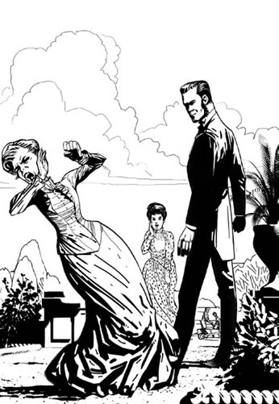
Florence screamed and fell to the ground. I ran to help her.
'Mrs Bravo has had an accident, Jane,' he said quietly. 'Please help her. She needs to wash her face. And then perhaps she will think about what I have said. Now, I am going to talk to these gardeners.'
That was how the marriage began, and that was how it went on. Almost every week there was a new argument, and almost every time he won and she lost. If she argued, he hit her, so she stopped arguing. The gardeners left and three horses were sold.
But even that wasn't enough for him. He argued with the coachman as well.
Before she met Charles Bravo, Florence's coachman, George Griffiths, used to take her and Dr Gully for long drives in the countryside. Sometimes I went with them. Florence liked George – she was interested in horses and so was he. She paid him well, and sometimes she spent hours outside in the stable yard, talking to him and watching him work with her horses.
But everything changed when she married Mr Bravo. Charles Bravo didn't really like horses – he was afraid of them. Sometimes he hit them, and then of course they ran away. That made George angry – he was kind to his horses, so they worked well for him. And George tried to argue when Charles sold three horses. Well, Charles didn't like servants to argue with him. So he decided to get rid of George Griffiths as well.
One day when George Griffiths was driving, another coach hit them. Nobody was hurt, but Charles was angry. He said George was a bad driver and it was all his fault.
The next day he came out to the stables. I was outside, in the garden, so I saw what happened. George Griffiths was putting some white powder in water for the horses.
'What's that?' Charles asked.
'Antimony, sir,' George answered. 'It's a medicine for horses. It cleans their stomachs.'
'Stop that!' Mr Bravo said. 'You can't give antimony to horses – it's a poison!'
That made George angry. He didn't think Charles Bravo knew anything about horses.
'It's all right to give them a little, sir,' he said. 'I've worked with horses for twenty years – I know what I'm doing.'
'I don't believe you. Yesterday you hit a coach and now you're trying to poison my horses!' Charles said angrily. 'That's it! I don't want you here. You can leave this job today!'
'But sir, I've got a wife and children!' George said. 'I ...'
'That's your problem, not mine!' Mr Bravo shouted. 'Get out of this house now, and don't come back!'
So George Griffiths lost his job. But before he left, I heard him talking to the other servants in the kitchen. He threw his coat on the table angrily.
'That man Bravo isn't just bad, he's crazy!' he shouted. 'I've worked with horses for twenty years, and now this! And he hits his wife, too – we all know that!'
'Well, you'll get a better job somewhere else, won't you?' said the cook. 'I'd like to leave too.'
'You and I can leave, but his wife can't, poor woman,' George said. 'You know what? Charles Bravo will be dead in four months. You wait and see.'
That was a strange thing to say. Did George mean he was going to kill him, himself? Surely not. He was just angry. But then, only a few weeks later, Charles Bravo was dead. So did George Griffiths kill him? Is that possible?
After all, Charles Bravo was poisoned with antimony. And George kept antimony in the stables. He used it as a medicine for the horses.
I never saw George again after that day. He got a job as a coachman with another lady, twenty miles away. And he told the Coroner he threw all the antimony away, before he left.
Maybe he did, I don't know. I don't know where he kept it. I didn't go into the stable yard very often – not as often as Florence, anyway.
But Charles went there quite often. He knew where everything was, and he was interested in medicine – that's why he knew that antimony was a poison.
So maybe he took the antimony, himself. That's what I think happened. Maybe it was an accident, but I think Charles Bravo killed himself.
perfect adj. as good as it can possibly be 完美的
coach n. a large closed vehicle, pulled by horses, used in the past for carrying people（旧时的）四轮大马车
简·考克斯的讲述——第一部分
6
简·考克斯的讲述
第一部分
我是简·考克斯太太，今年49岁。我是弗洛伦丝·布拉沃的朋友兼陪护。布拉沃先生去世时我就住在巴勒姆的普里奥里。现在我住在自己家，在兰开斯特路上……
我第一次见到查尔斯·布拉沃是在1869年，我来到英格兰的两年后。我丈夫是1867年在牙买加去世的。我当时有三个年幼的儿子，钱也很少。查尔斯的继父，约瑟夫·布拉沃认识我丈夫，他借给了我一些钱。我就是在他家认识的查尔斯。
后来，我为弗洛伦丝·里卡多工作。她是一位年轻可爱的女士——非常友好、善良和风趣。我是她的陪护——我的工作就是和她聊天，并帮她管理仆人。很快我们就成了朋友。我们经常聊天，彼此无话不谈。
弗洛伦丝喜欢我那几个儿子。她因为自己没有孩子而难过。“我一直想要孩子，”她说，“一大堆孩子。但是我和亚历山大一个孩子也没有，现在，唉……”她伤心地摇摇头。“要想有孩子，我得先有个丈夫。可如意郎君并不容易找，是不是，简？”
当我第一次遇到弗洛伦丝时，她是格利医生的一位密友。我喜欢格利医生——他是个心地善良又平易近人的好男人。关于他在医院的工作，格利医生有讲不完的趣事。我跟他讲我在牙买加的生活——他年轻时也去过牙买加。
但他年纪太大了，娶弗洛伦丝不合适，而且他妻子还在世。所以我把弗洛伦丝介绍给了查尔斯·布拉沃。
我知道，这是个大错误，我现在明白了。但当时我还不是十分了解查尔斯。我觉得他年轻、聪明、英俊、风趣——和弗洛伦丝正好是一对儿。最初，弗洛伦丝也是这么想的。
弗洛伦丝是这么和我谈他的。“我并不是非常爱他，简，”她说，“并不像爱格利医生那样爱他，但是……嗯……查尔斯和我年纪相仿。我和他这样的年轻男子能生几个孩子。我父母也会喜欢他的。已婚妇女们也会邀请我去她们家，再和我聊天了。”
“那么，是个如意郎君了。”我笑着说。
“是的，”她说，“我想是的。”
但查尔斯当然不是个完美的丈夫。我现在知道了。弗洛伦丝也知道了。她是在婚礼结束几天之后发现的。我听见了他们在花园里的谈话。
“我们有几个花匠，亲爱的？”查尔斯问她。
“三个。”她说，“你问这事儿干什么，查利？”
“哦，三个太多了。”他回答说，“他们并没有好好做事——我今天早上看见有两个在抽烟。我肯定我们只要一个就够了。”
“哦，但是他们要养家糊口，”弗洛伦丝说，她感到奇怪，“而且……他们爱花。”
“嗯，他们可以回到自己家种花去。”查尔斯冷冷地笑着说，“从现在起，我们只要一个花匠，而不是三个。”
“噢，不，查尔斯，求你……”
“还有一件事，”她的新婚丈夫继续说，“我今天早上查看了马厩，我们有五匹马，弗洛伦丝。五匹马呀！太多了。我打算下周卖掉其中三匹。”
“但是查尔斯，你不能这么做！”弗洛伦丝尖叫道，“那是我的马，不是你的——我爱它们！”
“我亲爱的弗洛伦丝，”查尔斯轻声说，他的声音听起来跟我预想的不一样——他既不生气也不恼火。实际上，他在嘲笑弗洛伦丝——他好像很喜欢弄得她不开心！“我亲爱的弗洛伦丝，我现在是你的丈夫，难道你没注意到吗？已婚妇女没有任何东西，她们不能拥有任何东西。所以，以前属于你的一切现在都是我的了。如果我想卖掉那些马，我就卖。是我来作决定，你只有服从的份儿。”
“不！”弗洛伦丝尖叫道。几个花匠听到了她的尖叫声，纷纷抬起头来看。她对着查尔斯大叫，正冲着他的脸大喊着：“那是我的马，你不可以卖掉它们！我不会让你这么做的！”
“你阻止不了我，你这个女人。”他说。接着，我听到了一个可怕的声音——他打她耳光的声音，而且不止一次，而是两次。她尖叫着摔倒在地上。我跑过去扶她。弗洛伦丝脸上有血，她哭了。我直视着打了她的那个人——如意郎君查尔斯·布拉沃——的眼睛，是我把弗洛伦丝介绍给了他。他竟然还在笑。
“布拉沃夫人出了点儿意外，简。”他轻声说，“请帮她一下，她需要洗洗脸。接下来，她可能要好好想想我刚才说的话了。现在我要去跟这些花匠们谈谈。”
这场婚姻就是这样开始，也是这样继续下去的。他们几乎每个星期都会吵架，而几乎每次都是查尔斯赢、弗洛伦丝输。如果她理论两句，他就打她，所以她就不吵了。花匠们离开了，三匹马也被卖了。
但这对查尔斯来说还不够。他和马车夫也吵上了。
在弗洛伦丝认识查尔斯·布拉沃之前，她的马车夫乔治·格里菲思曾经带着她和格利医生在乡间长时间地兜风，有时我也跟他们一起去。弗洛伦丝喜欢乔治——她对马感兴趣，乔治也是。她给乔治的薪水很高。有时她还会在马厩呆上几个小时，跟乔治聊天，看着他侍弄她的那些马。
但自从她嫁给布拉沃先生之后，一切都变了。查尔斯·布拉沃并不怎么喜欢马——他怕它们。有时他打它们，它们当然就跑了。这让乔治很生气——他对他的马非常好，所以那些马也很听乔治的话。当查尔斯要卖掉那三匹马时，乔治还努力地跟他理论了一番。当然，查尔斯不喜欢下人跟他理论。于是，他决定把乔治·格里菲思也一块儿解雇了。
一天，当乔治·格里菲思在驾驶马车时，另一架马车撞到了他们。没有人受伤，但查尔斯却生气了。他说乔治的驾车技术不行，全都是乔治的错。
第二天，他去了马厩。我当时在花园里，所以我看到了发生的一切。乔治·格里菲思正把一些白色的粉末放到水中给马喝。
“那是什么？”查尔斯问道。
“锑，先生。”乔治回答说，“是给马的药，能清洁马的胃。”
“住手！”布拉沃先生说，“你不能给马吃锑——那是毒药！”
这话激怒了乔治，他认为查尔斯·布拉沃一点儿都不懂马。
“给它们吃点儿锑没事儿，先生。”他说，“我和马打了二十年交道——我知道自己在做什么。”
“我不相信你。昨天你撞了车，现在你又想给我的马下毒！”查尔斯怒气冲冲地说，“就这样！我不想让你在这儿工作了。你今天就可以离开！”
“但是先生，我还得养家糊口呢！”乔治说，“我……”
“那是你的事，跟我无关！”布拉沃先生咆哮道，“现在就给我滚出这个家，别再回来了！”
就这样，乔治·格里菲思丢了工作。但在他离开之前，我听到他在厨房和另外几个仆人的谈话。他愤怒地把外套扔在桌子上。
“那个叫布拉沃的家伙不只是坏，他就是个疯子！”乔治大喊道，“我和马打了二十年交道，居然落得这个下场！他还打自己的老婆——我们大家都知道！”
“我说，你可以在别的地方找到一个更好的工作，不是吗？”厨师说，“我也想走了。”
“你我都能走，可他老婆就走不了了，可怜的女人。”乔治说，“你知道吗？不出四个月，查尔斯·布拉沃就会死。不信走着瞧。”
乔治说这话是有点儿奇怪。乔治的意思是他要亲手杀了布拉沃吗？肯定不是。他只是说的气话。但是，只过了几周，查尔斯·布拉沃真的死了。是乔治·格里菲思杀的他吗？这可能吗？
毕竟查尔斯·布拉沃是被锑毒死的，而乔治在马厩里就存放有锑。他用锑来给马治病。
自从那天之后，我再没见过乔治。他给二十英里外的一位太太当马车夫去了。而且，乔治告诉验尸官，他在离开之前把锑全都扔掉了。
也许他是扔了吧，我不知道。我也不知道他把锑存放在哪儿。我不经常去马厩那个院子——至少不像弗洛伦丝去得那么频繁。
但查尔斯经常去那儿。什么东西放在哪儿他都知道，他也对药感兴趣——所以他才知道锑是一种毒药。
所以，也许是查尔斯自己吞服了锑。这就是我的想法。也许这是个意外，但我认为查尔斯·布拉沃是自杀。
7．Jane Cox's story—PART 2
7
Jane Cox's story
PART 2
My name is Mrs Jane Cox. I am 49 years old. I am Florence Bravo's friend and companion. At the time of Mr Bravo's death, I was living at The Priory, in Balham. I now live in my own house in Lancaster Road ...
Soon after her marriage, Florence became pregnant. She was happy about this, and Charles was pleased too. 'The baby will be a boy,' he said. 'We'll call him Charles Bravo the Second!'
But Florence often felt ill. And she and Charles argued all the time – about money, the servants, the horses, everything. But the worst arguments were about Dr Gully. One day, Charles opened a letter, and started shouting angrily. 'Look at this,' he said to Florence. 'It's from Dr Gully, isn't it? This is what he thinks of me!'
Florence read the letter and showed it to me. It was a horrible letter.
'I know why you married Florence,' the letter said. 'You don't love her. You just wanted her money, that's all.'
'That's awful, Charles,' Florence said. 'But I don't understand. There is no name on this letter. Who wrote it?'
'You know very well who wrote it!' Charles shouted. 'Dr Gully, of course! That's his handwriting, I'm sure it is! You've been talking to him about me, haven't you? You're still in love with him, aren't you?'
'No, Charles, I'm not!' Florence said. 'I haven't spoken to Dr Gully once since we were married. Anyway, look at this letter, this is terrible handwriting. Dr Gully writes much better than this.'
Charles Bravo smiled – a cold, angry smile. 'Really? Well, let's see. He's written lots of letters to you, hasn't he, Florence? And you've kept them, because you're in love with him. Go and find them, Florence, bring them here. Then we'll see if this handwriting is the same.'
Florence's face went quite red. 'I haven't got them, Charles,' she said. 'I sent them all back to him, before we got married. And he gave me back all my letters, too – the ones I wrote to him.'
'Oh, really? Well, where are those letters? Bring them here, let me see them.'
'I can't.' Florence started to cry. 'I can't show you anyway, because I burnt them all on the fire. And I think Dr Gully burnt all my letters too. You see, I don't love him any more, Charles. That's over, it's finished. I'm never going to see Dr Gully again.'
She stopped crying and put her hand on his arm. 'That's what you should do with this letter, too. It's a horrible letter, Charles. Just burn it, forget all about it. Just as I have forgotten Dr Gully.'
'Have you really, Florence? Are you sure?'
'Yes, Charles, I'm sure.' She put her arms around him, and leaned her head against his chest. 'You're my husband now, Charles. I'm going to have your baby. So we must be kind to each other, and not argue about silly things like this.'
Very gently, she took the letter from his hand, and threw it into the fire.
Florence didn't meet Dr Gully, but I did. I met him on the train one day, on 25th March, on the way to London. I told him about my mother in Jamaica, and asked him for some medicine for her. A few days later, he wrote to me at The Priory.
I opened the letter, but Charles didn't like that. 'Let me see that, Mrs Cox,' he said, holding out his hand. 'I'm the man of this house, I should read all the letters first, you know. Who is it from?'
'It's from Dr Gully,' I said. 'It's about my mother, that's all. She's ill in Jamaica. He writes about some medicine for her.'
He took my letter and read it. There was a list of medicines inside. Then he gave it back to me. 'Well, don't write back to him,' Charles Bravo said. 'I don't want anyone in this house to write to that man.'
Two weeks later, on 6th April, I found Florence crying in her bedroom.
'What's wrong?' I asked. 'Have you and Charles been arguing again?'
'No, it's not that,' she said. 'It's worse. Call a doctor. I think I've lost the baby.'
Florence was right; she had lost her baby. She was ill, and spent two weeks in bed. I slept in her bedroom with her. Charles didn't like that. He didn't understand how difficult such things are for women. When she stayed in bed crying, that made him angry and impatient. He thought she should get up the next day. He seemed to think that a woman losing her baby was nothing important.
But I was worried, and so I was pleased when I met Dr Gully again on the train. I told him about Florence's illness, and he promised to send some medicine for her. But he didn't want to make Charles angry, so he didn't send it to The Priory. He left it at my house, in Lancaster Road, and I took it to Florence from there.
A few days later, Charles called me into his study.
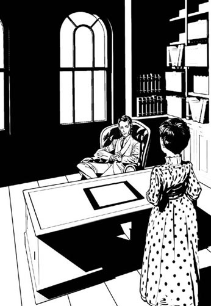
A few days later, Charles called me into his study.
'Mrs Cox,' he said. 'I have been thinking. There are too many people in this house.'
'Too many people?' I said. 'What do you mean?'
'I mean,' he said, 'that I don't need you in this house any more.'
'But, sir ... I am not here to help you. I work for Mrs Bravo.'
'Mrs Bravo is my wife. I make the decisions in this house, and I don't want you here any more. Every time I try to talk to my wife, you are there with her. You even sleep in her bedroom. That isn't right!'
'But she's ill, sir! She's just lost her baby. She needs me – she wants me there.'
'Well, I don't want you there. When Florence is better, I want you to leave. Do you understand? I don't need your help any more.'
This was a terrible thing for me. I needed my job to pay for my sons' school. And Florence was my friend. I was worried about her. If I leave, I thought, he can hit Florence every day, and no one will know.
As I walked out of the room, I thought: I hate that man, Charles Bravo. I wish he were dead.
When I told Florence, she cried. 'Jane, please don't leave me,' she said. 'I need you here to keep me safe. Promise me you won't go!'
'I don't want to leave,' I said. 'But what can we do? He's your husband – he can do what he likes.'
'I'll talk to him,' she said. She was a brave lady, Florence. She tried to make her own decisions; she didn't want to obey her husband all the time. But Charles was a dangerous, violent man.
'What if he hits you again?' I asked. 'He may hurt you badly.' I wanted to save her, but I didn't know how.
She sat up in bed. 'I won't let him, Jane,' she said. 'You and I – we must work together. We must stop that man, before he destroys both of our lives. This is my house, not his. He must listen to me, and learn to do what I want.'
'But he doesn't listen to women,' I said. 'He thinks we're like children, or servants. How can you change that?'
'I'll find a way, Jane,' she said quietly. 'Don't worry, I'll find a way.'
pregnant adj. expecting a baby 怀孕的
horrible adj. making you very afraid or unhappy 可怕的，令人不快的
handwriting n. the way you write 笔迹，字迹
简·考克斯的讲述——第二部分
7
简·考克斯的讲述
第二部分
我是简·考克斯太太，今年49岁。我是弗洛伦丝·布拉沃的朋友兼陪护。布拉沃先生去世时我就住在巴勒姆的普里奥里。现在我住在自己家，在兰开斯特路上……
婚后不久，弗洛伦丝就怀孕了。她很高兴，查尔斯也很兴奋。“肯定是个男孩。”他说，“我们叫他查尔斯·布拉沃二世！”
但是，弗洛伦丝经常生病。她和查尔斯也总在吵架——为钱，为仆人，为马匹，为所有的事争吵。但最激烈的争吵还是为格利医生。有一天，查尔斯打开一封信后就恼火地大叫起来。“看看这个，”他对弗洛伦丝说，“是格利医生写来的，对不对？他就是这么看我的！”
弗洛伦丝读了那封信，并拿给我看。那是一封可怕的信。
“我知道你为什么娶弗洛伦丝。”信上说，“你不爱她，你就是想要她的钱，仅此而已。”
“这太可怕了，查尔斯。”弗洛伦丝说，“但我不明白。信上没署名。谁写的呢？”
“谁写的你心知肚明！”查尔斯咆哮道，“当然是格利医生！那是他的笔迹，我敢肯定是他的！你一直在跟他讲我的事，是不是？你还爱着他，是不是？”
“不，查尔斯，我没有！”弗洛伦丝说，“自从跟你结婚后我就没有和格利医生说过一句话。不管别的，看看这封信，这糟糕的笔迹，格利医生写得可是比这好看多了。”
查尔斯·布拉沃笑了——是那种冷冷的、恼怒的笑。“是吗？好吧，让我想想。他给你写过好多信，是吧，弗洛伦丝？而你还留着那些信，因为你还爱着他。去找那些信，弗洛伦丝，把它们拿过来。我们比比看这个笔迹是不是一样的。”
弗洛伦丝的脸涨得通红。“我没有留下那些信，查尔斯，”她说，“我们结婚前我都给格利医生寄回去了。他也把我的信——我写给他的信都还给我了。”
“哦，是吗？那么，你写给他的信在哪儿？拿到这儿来让我看看。”
“不行。”弗洛伦丝哭了起来，“我给你看不了，因为我把它们都烧了。我想格利医生也把我的信都烧了。你知道的，查尔斯，我不再爱他了。我和他的一切都结束了。我再也不会见格利医生了。”
她不哭了，伸出一只手挽着查尔斯的胳膊。“你也应该这么处理这封信。这封信太可怕了，查尔斯。烧掉它，忘了这件事，就像我忘了格利医生一样。”
“你真的已经忘了格利医生了吗，弗洛伦丝？你确定吗？”
“是的，查尔斯，我确定。”她伸出双臂搂着他，头靠着他的胸膛。“你现在是我的丈夫，查尔斯。我都怀了你的孩子了。所以，我们必须对对方好，不要再为这些无聊的事争吵了。”
弗洛伦丝轻轻地从查尔斯手中抽出那封信，扔到了炉子里。
弗洛伦丝没有见过格利医生，但是我见过。有一天，就是3月25日，在去往伦敦的火车上我见到了格利医生。我跟他说了我母亲在牙买加的事，并向他要了些药方给我母亲。几天后，他给我写了封信，寄到了普里奥里。
我打开信，但查尔斯不高兴了。“让我看看，考克斯太太。”他说着就伸出了手，“我是一家之主，所有的信都得由我先看，你知道的。谁写来的信？”
“格利医生写来的，”我说，“是有关我妈妈的事，仅此而已。我妈妈在牙买加生病了，格利医生给她开了一些药方。”
他拿过信读了起来。信上列了一串药品的名字。然后他把信还给我。“好吧，别给他回信，”查尔斯·布拉沃说，“我不想这个家里的任何人给那个男人写信。”
两周后，就是4月6日，我发现弗洛伦丝在她的卧室里哭泣。
“出什么事了？”我问道，“查尔斯又和你吵架了？”
“不，我们没吵架，”她说，“但是情况更糟。叫医生来，我想我已经失去宝宝了。”
弗洛伦丝说得对，她流产了。她也病倒了，两个礼拜都卧床不起。我和她一起睡在她的卧室里。查尔斯不高兴了。他不理解这种事对女人来说有多难过。当弗洛伦丝躺在床上哭泣时，他就又生气又不耐烦。他认为她第二天就应该下床活动。他好像觉得一个女人没了孩子不是什么大不了的事。
但我很担心，所以当我再一次在火车上碰到格利医生时我很高兴。我跟他说了弗洛伦丝生病的事，格利医生答应给她寄点儿药来。但格利医生不想惹查尔斯生气，所以他并没有把药寄到普里奥里。他把药寄到我在兰开斯特路的家中，我再从自己家带给弗洛伦丝。
几天后，查尔斯把我叫到他的书房。
“考克斯太太，”他说，“我一直在想，我们家的人太多了。”
“人太多了？”我问道，“你这话是什么意思？”
“我是说，”他说，“我不需要你在这个家了。”
“但是，先生……我在这里不是帮你的忙，我为布拉沃夫人服务。”
“布拉沃夫人是我妻子。这个家由我说了算，我不想再雇用你了。每次我想跟我妻子说点儿话时，你都在她身边。你甚至还睡在她的卧室里。这可不行！”
“但她生病了，先生！她刚刚流产。她需要我——她想让我陪她。”
“好了，我不想让你陪她。弗洛伦丝病情好转后你就离开。你明白吗？我不再需要你帮忙了。”
这对我来说可是晴天霹雳。我需要这份工作来供三个儿子上学。而且，弗洛伦丝是我的朋友，我很担心她。如果我走了，我想，他就可以每天打弗洛伦丝，并且不会有人知道。
我走出书房时，心想：我恨那个人，查尔斯·布拉沃。我真希望他死掉。
当我告诉弗洛伦丝这件事时，她哭了。“简，求你别离开我，”她说，“我需要你在这里保护我。答应我，别走！”
“我不想走，”我说，“但我们又能怎么办呢？他是你丈夫——他想干什么就干什么。”
“我去跟他谈谈。”她说。弗洛伦丝是个勇敢的女子。她想自己作决定，她不想一直对丈夫唯命是从。但查尔斯是个可怕又暴力的人。
“如果他再打你怎么办？”我问道，“他可能会把你伤得很重。”我想救她，但不知道怎么救。
她从床上坐起来。“我不会让他再打我了，简。”她说，“你和我——我们必须联手。在那个人毁掉我们俩的生活之前，我们必须制止他。这是我的家，不是他的。他必须听我的，学着按我说的去做。”
“但他是不会听女人的话的。”我说，“他认为我们就跟小孩儿或仆人一样。你怎么能改变他的想法呢？”
“我会想办法的，简。”她轻声说，“别担心，我会想出办法的。”
8．Florence Bravo's story—PART 3
8
Florence Bravo's story
PART 3
My name is Mrs Florence Bravo. I am 31 years old. I live at The Priory, in Balham. At the time of his death, my husband, Charles Bravo, lived there too. My friend and companion, Jane Cox, was also living in the house ...
When Jane Cox told me what Charles had said, I was very worried. Jane was very important to me. I didn't want to lose her.
On Tuesday, April 18th, I felt a little better, so I got up. It was my first day out of bed. Jane went to Worthing to look at a holiday house for us, and I went to London with Charles. In the carriage he said: 'I'm pleased Jane's gone to Worthing, Florence. We haven't been alone together for two weeks. I'll be happy when that woman is gone.'
'Please don't say that, Charles,' I said. 'Jane is my best friend.'
'She was your best friend, darling,' said Charles, smiling. 'Before you met me. Now I'm your best friend, aren't I?'
'Well yes,' I answered. 'But you're my husband, Charles. I need Jane, to talk about women's things. That's what I pay her for.'
'Well, she's too expensive,' Charles said. 'I spoke to her yesterday. I told her to leave at the end of the month.'
'But Charles, you can't do that!' I said. 'She needs the money to look after her children. Anyway, she works for me, not you. So she's staying, Charles. All right?'
'No!' he shouted. He held my arm hard, really hard, and it hurt. He was strong – much stronger than me – and his face was close to mine. 'You're my wife, Florence – you do what I say! Do you understand?'
I was frightened. 'Let go of my arm, Charles! People in the street are watching – what will they think?'
'I don't care,' he said. 'It's none of their business. What are you going to do – call Dr Gully?' We were driving past Dr Gully's house at the time.
'Don't be stupid, Charles,' I said. 'You know I don't talk to Dr Gully any more. I told you – you're my husband, I love you, not him!'
'Do you?' he said. He still held my arm. 'Well, kiss me then. And forget about Jane and Dr Gully.'
I was afraid, so I kissed him. Then we drove on in silence. It was a bad start to the day, but before we got to London Charles was happy again. He talked to me kindly and told funny stories. He was often like that – angry for a short time, then friendly a few minutes later. He was a difficult man, but I tried to understand him. That's what a wife has to do, isn't it? Understand her husband and love him. But I was very worried about losing Jane.
In London Charles visited his cousin, Dr Royes Bell. I went shopping. After lunch I went home and had a rest; it was my first day out of bed. Charles came home later. He was happy and excited. 'I'm going out for a ride,' he said. He went outside and called the groom.
'Get that big horse, Cremorne, ready for me, man. Quickly, now.'
'Is that a good idea, sir?' the groom asked. 'Cremorne's been a little difficult this week.'
Charles thought he knew a lot about horses but he didn't, really. He shouted angrily at the groom. 'Don't argue with me, man! Get him ready! I know how to ride my own horse, damn you!'
But an hour later he came home, shaking. His face was white and his shirt was wet with sweat. 'That horse Cremorne is dangerous!' he said. 'We'll have to sell it.'
'Why, Charles,' I asked, 'what happened?'
'The horse ran away with me. For six miles he wouldn't stop.'
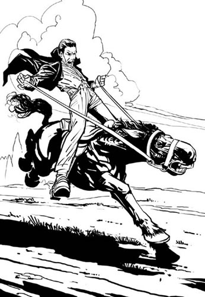
'The horse ran away with me. For six miles he wouldn't stop.'
'How awful! Are you hurt? Did you fall off?'
'No, thank God, I didn't. But my arms and chest hurt. He's very strong, that horse – like a wild animal!'
'Go upstairs and rest before dinner. I'm sorry you were frightened, Charles.'
He walked slowly upstairs with his hand on his chest. At the top, he looked down angrily.
'I wasn't frightened, Florence, don't be silly. Anyway, it's the groom's fault, not mine. He gave the horse too much food, that's all.'
Charles still looked ill at dinner that evening. Jane talked to him about the holiday house in Worthing but he didn't answer. He ate a lot of food and drank three glasses of wine. After dinner I was tired, so I went up to my bedroom. Jane came up a few minutes later.
My maidservant, Mary Ann, brought me a glass of wine to help me sleep. But Charles came into my bedroom and saw it. He didn't like me drinking wine in the evening. He often tried to stop me.
'You drink too much, Florence,' he said. 'I've told you before. You'll make yourself ill.'
It's true. I did sometimes feel ill after drinking wine. I was sick once or twice, I don't know why. But wine usually made me feel warm, and sleepy. I liked that.
'I'm tired, Charles,' I said. 'Leave me alone.'
Charles went out. I lay down in bed, and Jane sat beside me, reading aloud from a book. It was peaceful in my bedroom and I was very sleepy. My maid came back in.
'Do you want anything else, madam?' she asked.
'No, thank you, Mary Ann,' I said. 'Just take the dogs downstairs, will you, please?'
Mary Ann went out with my two dogs and closed the doors behind her. There are two doors to my bedroom – an outside door and an inside door – and she closed them both. I like that; it makes the room very quiet. I lay there for a minute or two, listening to Jane's voice reading to me, and then ...
... I fell asleep.
I don't know what happened next. Mary Ann says that Charles called for help. But I didn't hear him. I was asleep.
sweat n. water that comes from your skin when you are hot or afraid 汗水
maidservant n. a female servant in a house 女仆
弗洛伦丝·布拉沃的讲述——第三部分
8
弗洛伦丝·布拉沃的讲述
第三部分
我是弗洛伦丝·布拉沃夫人，今年31岁。我住在巴勒姆的普里奥里。我丈夫查尔斯·布拉沃去世时也住在那儿。我的朋友兼陪护简·考克斯当时也和我们住在一起……
当简·考克斯告诉我查尔斯的话后，我非常着急。简对我来说太重要了，我不想失去她。
4月18日，星期二，我感觉略有好转，于是就下了床。那是我病后第一次下床。简去了沃辛，为我们找一幢度假用房，我和查尔斯则去了伦敦。在马车上，他说：“我很高兴简去了沃辛，弗洛伦丝。我们已经有两周时间没有单独在一起了。那个女人走了以后，我会非常高兴。”
“求你别那么说，查尔斯，”我说，“简是我最好的朋友。”
“她曾经是你最好的朋友，亲爱的，”查尔斯笑着说，“在你遇到我之前。但现在我才是你最好的朋友，不是吗？”
“嗯，是。”我回答说，“但你是我的丈夫，查尔斯。我需要简，跟她说说女人的事。这正是我雇她的原因。”
“不过，她的工资太高了。”查尔斯说，“我昨天跟她说了，叫她月底离开。”
“但是查尔斯，你不能那么做！”我说，“她需要钱养她的几个孩子。不管怎么说，她是为我服务，而不是为你服务。所以让她留下来，查尔斯，好吗？”
“不行！”他咆哮道。他用力抓着我的胳膊，真的非常用力，把我都弄疼了。他很壮实——比我壮多了——他的脸离我的脸很近。“你是我妻子，弗洛伦丝——你得照我说的办！你明白吗？”
我被吓坏了。“放开我，查尔斯！大街上的人都看着呢——他们会怎么想？”
“我不在乎，”他说，“这根本就不关他们什么事。你想干什么——叫格利医生？”我们当时正好坐马车经过格利医生家。
“别傻了，查尔斯，”我说，“你知道我再没和格利医生说过话。我跟你说过——你是我丈夫，我爱的人是你，不是他！”
“是吗？”他说。他依然抓着我的胳膊。“好，那就亲我一下。忘掉简和格利医生。”
我怕了，所以就吻了他。接着我们的马车继续前行，我们俩都没有说话。那天有这样一个开始可真是糟糕，但我们快到伦敦时，查尔斯又高兴起来。他和颜悦色地跟我说话，还讲了一些有趣的故事。他经常这样——生一会儿气，几分钟后态度又友好起来。他是个难以相处的人，但我尽力去理解他。这是一个妻子应该做的，不是吗？要理解丈夫并爱他。但我对要失去简这件事还是很担忧。
在伦敦，查尔斯拜访了他的堂兄，罗伊斯·贝尔医生。我则去逛街了。午饭后，我就回家休息了。那天是我病后下床活动的第一天。查尔斯后来也回家了。他又开心又兴奋。“我要出去骑一会儿马。”他说。他出了门，叫上了马夫。
“伙计，去把那匹大马，就是克雷莫恩，给我备好。快，现在就去。”
“这行吗，先生？”马夫问道，“克雷莫恩这个星期有点儿难驾驭。”
查尔斯以为自己很懂马，其实不然。他生气地朝马夫喊道：“别跟我顶嘴，伙计！去给我备马！我知道自己的马该怎么骑，你这该死的！”
但是一个小时之后，查尔斯浑身颤抖着回家了。他脸色发白，衬衫被汗水浸湿了。“那匹叫克雷莫恩的马性子真烈！”，他说，“我们得把它卖了。”
“为什么，查尔斯，”我问道，“发生什么事了？”
“那匹马载着我狂奔起来，一口气跑了六英里都不停。”
“太可怕了！你受伤了吗？你有没有坠马？”
“没有，谢天谢地，我没有坠马。但我的胳膊和胸口疼。那匹马非常强壮，它——就像一只野兽！”
“上楼去吧，休息一下再吃饭。见你受到了惊吓，我很难过，查尔斯。”
他一只手捂着胸口慢慢地上楼了。走到顶时，他恼火地回头向下看。
“我没有受到惊吓，弗洛伦丝，别犯傻了。不管怎么说，都是那个马夫的错，不怪我。他让那匹马吃太多了，仅此而已。”
那天晚上吃晚饭时，查尔斯看上去脸色依然不是很好。简跟他说了沃辛的度假用房，但他没说什么。他吃了不少饭，还喝了三杯酒。晚饭后我累了，就上楼回到自己的卧室。几分钟后，简也上楼来了。
我的女仆玛丽·安给我端来一杯酒，助我入眠。但是，查尔斯走进我的卧室时看见了那杯酒。他不喜欢我晚上喝酒。他经常想阻止我。
“你喝得太多了，弗洛伦丝。”他说，“我以前告诉过你，这样下去你会生病的。”
他说得对。有时喝完酒后，我的确觉得不舒服。我吐过一两回，不知道是为什么。但酒通常让我感到温暖、昏昏欲睡。我喜欢那种感觉。
“我累了，查尔斯，”我说，“让我一个人呆会儿吧。”
查尔斯走了出去。我躺在床上，简坐在我旁边，大声朗读一本书给我听。我的卧室一片宁静，我困得不行。这时我的女仆又走了进来。
“您还有什么需要吗，夫人？”她问道。
“没有了，谢谢，玛丽·安。”我说，“请把狗带到楼下去，好吗？”
玛丽·安带着我的两条狗走出了房间，并随手关上了房门。我的卧室有两道门——一道外门，一道内门——她把两扇门都关了。我喜欢这样，这会让我的房间非常安静。我在床上躺了一两分钟，听着简给我读书，接着……
……我就睡着了。
我不知道接下来发生了什么事。玛丽·安说查尔斯呼救了，但我没有听到，我睡着了。
9．What the maid saw
9
What the maid saw
Those were the three important stories heard at the London Coroner's enquiry in July and August 1876 – the stories of Florence Bravo, Dr James Gully, and Mrs Jane Cox. There was truth, and perhaps also a few lies, in all the stories.
But there were also other stories heard at the enquiry in 1876. There was Florence's maidservant, for example, Mary Ann Keeber ...
Every day the maid, Mary Ann Keeber, cleaned the bedrooms at The Priory and lit fires in them to make them warm. She always put a bottle of drinking water beside Charles Bravo's bed. Later, in the evenings, she helped Charles and Florence with anything they wanted.
On the night of Tuesday 18th April, Mary Ann closed the two doors to Florence's bedroom and went downstairs with the dogs. But halfway down the stairs, one of the dogs ran back up again. As Mary Ann turned to call it, she saw Charles Bravo open his bedroom door. His face was white and he looked afraid. 'Florence! Florence!' he shouted. 'Hot water! Hot water!' Then he ran back into his room.
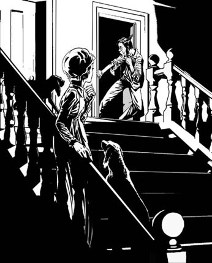
Charles Bravo's face was white and he looked afraid.
Mary Ann was surprised. She waited for Florence or Mrs Cox to come out and help him, but they didn't. Perhaps they hadn't heard him, she thought. So she hurried back into Florence's bedroom. Florence was in bed with her eyes closed and Jane Cox was sitting beside her. Mary Ann told Jane what had happened. 'Come quickly,' she said. 'There's something wrong with Mr Bravo!'
Jane Cox and Mary Ann went into Charles's bedroom. They saw Charles standing by an open window. His face was grey and wet with sweat. 'Help!' he cried. 'Hot water! Hot water!' He leaned out of the window and vomited onto the kitchen roof below. Then he fell to the floor.
Mrs Cox told Mary Ann to run downstairs and fetch some hot water. When Mary Ann came back, she saw Charles sitting on the floor. Mrs Cox had her hands on his chest. She was trying to help him breathe, Mary Ann thought.
'Get some mustard – hurry!' Mrs Cox said. So Mary Ann ran downstairs again. When she came back, Jane Cox told her to put the mustard into the hot water and lift Charles's feet into it.
'It's an old way to help a sick person,' Mrs Cox said. 'Rub his feet with the hot water and mustard.'
Mary Ann tried, but Charles knocked the water over and fell on the floor with his eyes closed. So then Mrs Cox gave him some mustard and hot water to drink, and sent Mary Ann downstairs again, for hot coffee. But the coffee only made him vomit again, into a bowl.
'Go and send the groom to fetch Dr Harrison,' Mrs Cox told Mary Ann. 'And then go and fetch some camphor from my room.'
So Mary Ann ran downstairs again for the groom, then upstairs to Mrs Cox's room for the camphor, but she couldn't find it. So she went into Florence's bedroom instead.
Florence was lying in bed with her eyes closed. Mary Ann shook her arm to wake her up.
'What is it?' Florence asked. 'What's the matter?'
'It's your husband, madam,' Mary Ann said. 'Come quick. He's ill.'
'What?' Florence said. 'Where is he?'
She jumped out of bed and ran into Charles's bedroom. Mary Ann followed. Charles was lying on the floor with Jane Cox sitting beside him. Florence knelt down and took his hand.
'Charlie, what's happened?' she said. 'Speak to me, darling – what's wrong?'
But he didn't answer. His eyes were closed and he looked half dead. Jane tried to get some coffee into his mouth again but it was no good. He didn't wake up.
'Have you sent for the doctor?' Florence asked.
'Yes, madam,' Mary Ann said. 'The groom has gone for Dr Harrison, in Streatham.'
Florence looked surprised and angry. 'But he lives two miles away, he'll be too late!' she said. 'Why didn't you send for Dr Moore? He lives nearer.' She ran downstairs screaming for one of the manservants. 'Get Dr Moore from Balham, as quickly as you can. Mr Bravo is very ill, he may be dying! Hurry, man, run!' Then she came back upstairs and knelt beside her husband again.
'Try to wake up, Charlie,' she said. 'Please, try. Don't leave me now.'
vomit v. to bring food from the stomach back out through the mouth 呕吐
mustard n. a thick yellow sauce, eaten cold with meat (used in the past as a medicine) 芥末
camphor n. a chemical with a strong smell, used in medicine 樟脑
女仆所见
9
女仆所见
上面这三种重要的说法就是弗洛伦丝·布拉沃、詹姆斯·格利医生和简·考克斯太太三个人于1876年七八月份在伦敦验尸庭研讯会上讲述的。他们的话里有实话，也许也有一些谎话。
但1876年的研讯会还听取了其他人的讲述，比如弗洛伦丝的女仆玛丽·安·基伯的讲述……
每天，女仆玛丽·安·基伯都会打扫普里奥里的几间卧室，并且生上火，让卧室暖和起来。她总会放一瓶饮用水在查尔斯·布拉沃的床边。然后到了晚上，她就是伺候查尔斯和弗洛伦丝，完成他们吩咐的任何事情。
4月18日周二的晚上，玛丽·安关上弗洛伦丝卧室的两扇门，带着两条狗下楼。但刚下了一半楼梯，其中一条狗又跑上楼去。当玛丽·安转身去喊那条狗时，她看见查尔斯·布拉沃打开了自己卧室的门。他脸色苍白，看上去很害怕。“弗洛伦丝！弗洛伦丝！”他大喊道，“热水！拿热水！”接着他跑回自己的房间。
玛丽·安很是惊讶。她等着弗洛伦丝或考克斯太太出来帮他，但她们都没有出来。也许她们没听见他的喊声，玛丽·安想。所以，她快步回到弗洛伦丝的卧室。弗洛伦丝闭着双眼躺在床上，简·考克斯坐在她身旁。玛丽·安告诉了简刚才发生的事。“快来，”她说，“布拉沃先生出事了！”
简·考克斯和玛丽·安来到查尔斯的卧室。她们看见查尔斯站在一扇敞开的窗户旁。他面如死灰，满脸是汗。“救命！”他叫道，“热水！给我热水！”他向窗外探出身子，吐在了下面的厨房房顶上。接着，他就倒在了地板上。
考克斯太太叫玛丽·安到楼下拿些热水上来。等玛丽·安回来后，她看见查尔斯坐在地板上，考克斯太太双手放在他的胸口。她是在帮查尔斯呼吸吧，玛丽·安想。
“拿些芥末来——快去！”考克斯太太说。于是玛丽·安再次跑下楼去。当她回来后，简·考克斯让她把芥末放到热水中，然后把查尔斯的双脚放了进去。
“这是帮助呕吐病人的老法子，”考克斯太太说，“用热芥末水搓他的双脚。”
玛丽·安试了一下，但查尔斯把水踢翻了，双目紧闭地倒在了地板上。于是，考克斯太太给了他一些热芥末水喝，再叫玛丽·安到楼下取了些热咖啡。但咖啡只是让查尔斯再次呕吐了起来，直接吐到了碗里。
“让马夫把哈里森医生请来，”考克斯太太告诉玛丽·安，“然后再去我的房间取点儿樟脑来。”
于是玛丽·安再次跑下楼去找马夫，接着又跑上楼，到考克斯太太的房间取樟脑。但她没找到。于是，她来到了弗洛伦丝的卧室。
弗洛伦丝正闭着双眼躺在床上。玛丽·安摇了摇她的胳膊，叫醒了她。
“怎么了？”弗洛伦丝问道，“出什么事了？”
“是您丈夫，夫人。”玛丽·安说，“快起来，他病了。”
“什么？”弗洛伦丝说，“他在哪里？”
她跳下床，跑进查尔斯的卧室。玛丽·安跟了进去。查尔斯躺在地板上，简·考克斯坐在他旁边。弗洛伦丝跪下来，抓住他的手。
“查利，你怎么了？”她说，“跟我说句话，亲爱的——出了什么事？”
但查尔斯没有回应。他两眼闭着，看上去奄奄一息的样子。简试着再给他喂点咖啡，但丝毫不起作用。他没有醒过来。
“你叫人去请医生了吗？”弗洛伦丝问道。
“叫了，夫人，”玛丽·安答道，“马夫已经去请斯特雷特姆的哈里森医生了。”
弗洛伦丝看上去又惊又怒，“但他住在两英里外的地方，来不及的！”她说，“为什么不去请穆尔医生？他住得近些。”她跑下楼，尖声叫着一个男仆的名字，“去把巴勒姆的穆尔医生请来，要尽快。布拉沃先生病得很重，他可能会死掉！快，小伙子，快去！”然后她跑上楼，再次跪在丈夫身边。
“醒醒，查利，”她说，“求你醒一醒。不要现在就离开我。”
10．What the doctors saw
10
What the doctors saw
During Charles Bravo's illness, he was seen by no fewer than five different doctors. And of course, the Coroner's enquiry took a great interest in what the doctors saw, and said, and thought ...
Dr Moore was the first doctor to arrive at The Priory on the night of Tuesday 18th April. He went upstairs to Charles Bravo's bedroom. A few minutes later, Dr Harrison arrived. Jane Cox met him at the front door.
'Mr Bravo has been sick several times,' she said. 'I think he has poisoned himself with chloroform.'
Dr Harrison went upstairs to the bedroom. Dr Moore was already there. 'This man is very ill,' he said. 'It's some kind of poison, but I don't know what it is.'
The two doctors looked around the room. There were two medicine bottles on a table: one said Chloroform, and the other Laudanum. Chloroform and laudanum were ordinary medicines. Many people in those days had them in their houses – they took them for headache or toothache. They weren't very dangerous; it would take an enormous amount of these medicines to kill somebody.
'He's not dying because of these medicines, is he?' said Dr Moore.
'No, I don't think so,' Dr Harrison agreed. 'He's far too ill for that.'
Florence Bravo was sitting on the bed beside her husband. She was washing his face with cool water.
'What's wrong with my husband, doctor?' she asked. 'He's not going to die, is he?'
Dr Moore put his hand on her arm. 'I'm sorry, Mrs Bravo,' he said. 'But your husband is really very ill. He has taken some terrible poison. He may not live long.'
Florence cried when he said that. She put her arms around her husband and kissed him. 'Oh, Charlie, please don't die!' she said. 'Come on, Charlie, you must get better. Speak to me – please don't leave me!'
But Charles was too ill to speak. The doctors gave him some medicine but it didn't help much. Florence watched, her face wet with tears. 'Charles's cousin is a doctor,' she said. 'Dr Royes Bell. He knows Charles very well – do you mind if I send for him?'
'No, that's all right,' Dr Harrison said. 'I'll write a letter for you.'
Dr Royes Bell knew Charles Bravo very well. He had met him in London that morning, and Charles had seemed happy and healthy as usual. He certainly said nothing about killing himself. So Dr Bell was very surprised when a letter from Dr Harrison arrived late that night.
Your cousin is very ill, the letter said. Please come quickly; I think he is dying.
Dr Royes Bell arrived at The Priory at about two o'clock in the morning. He brought with him another doctor, Dr George Johnson, who was both a friend and a well-known London doctor.
Charles was lying on his bed, asleep. His face was greyish white and he was breathing heavily. Dr Bell touched his face and his eyes opened.
'Charlie,' he said. 'Do you know who I am?'
For a moment Charles seemed not to understand, or recognize anybody around him. Then, after a minute, he said, 'Yes. You're Royes.'
'This is Dr Johnson,' Dr Bell said. 'We've come to help you, Charlie. How do you feel?'
'Terrible,' Charles answered. 'My stomach hurts. Let me out!' He suddenly jumped up and tried to get to the door, but the doctors held him and after a minute he fell back onto the bed. Dr Johnson gave him some medicine to take away the pain, and after a few minutes he began to look more comfortable.
Outside the room, the doctors spoke to Mrs Cox. 'You saw Mr Bravo first, before Dr Moore came,' Dr Johnson said. 'Did he say anything to you then?'
'Yes,' Mrs Cox answered. 'He said: "I've taken some of that poison; don't tell Florence."'
'Did he tell you what poison he took?'
'No,' Mrs Cox answered. 'Nothing more than that.'
When Dr Harrison heard this, he was angry. 'Why didn't you tell me that before?' he asked. 'You said he had taken chloroform, not poison.'
The doctors went back into Charles's bedroom. 'Charlie, have you taken poison?' Dr Johnson asked.
'I rubbed my teeth with laudanum; perhaps I drank a little by mistake,' Charles replied.
'Laudanum wouldn't make you ill like this.'
'Well, if it isn't laudanum, I don't know what it is,' Charles said.
Then Florence came back in. There were tears on her face and she looked very tired. Charles held out his arms to her. 'Kiss me, my wife,' he said. Florence went to the bed and kissed him. Then she lay down beside him and touched his face gently with her fingers. The two doctors watched.
'What a lot of trouble I'm giving you, florrie,' Charles said. 'Kiss me again. You've been the best of wives.'
'Oh, Charlie!' Florence said. 'What is the matter with you? What have you taken to make you so ill?'
Charles didn't answer. 'Oh, God help me!' he screamed in pain. Then he turned to his cousin and said: 'Royes, will I get better?'
'I hope so, Charlie, but you are very ill indeed.'
When Dr Bell said that, Charles looked frightened. 'Royes,' he said. 'Before I die, I want you to write something for me. Will you do that?'
Dr Bell wrote down Charles Bravo's words. I leave everything I have to my wife, Florence Bravo.
Charles sat up to write his name, and he and Dr Bell prayed to God together. Then he said: 'When I'm dead, Royes, look after Florence for me, will you? She's been the best of wives to me.'
At the Coroner's enquiry in July, some of the lawyers said that Florence killed her husband. But Charles's cousin, Dr Royes Bell, didn't believe that. Charles loved his wife, he told the lawyers. He left her everything. And Florence was very, very unhappy that night, when she saw her husband so ill. She called four doctors – Dr Moore, Dr Harrison, Dr Bell, and Dr Johnson. And on Thursday 20th April she sent for a fifth doctor, Dr William Gull.
Dr Gull was very famous and important, and was the doctor to Queen Victoria herself. He arrived at The Priory at six o'clock on Thursday evening. Charles Bravo was still alive, but he was very seriously ill.
'Mr Bravo, you have taken poison,' Dr Gull told him. 'Please tell me, who gave it to you?'
'I took it myself,' Charles Bravo said.
'What did you take?' Dr Gull asked.
'Laudanum,' Charles Bravo replied. 'I took some laudanum because I had toothache.'
'A little laudanum can't kill you, Mr Bravo,' Dr Gull said. 'What else did you take?'
'Nothing else. Only laudanum, doctor. That's all.'
'Mr Bravo, listen to me. You are very ill, you are going to die. It's important that you tell me the truth. What is this poison? If someone gave it to you, they wanted to kill you. Do you understand that?'
Charles Bravo shook his head slowly. 'It was only laudanum, doctor,' he said. 'No one gave it to me. I took it myself.'
That was the last thing he said to Dr Gull. A few hours later, Charles Bravo died. Five different doctors had seen him, and he told them all the same story. He had taken laudanum, he said, and then called for hot water to make himself sick.
'Where was he sick?' Dr Gull asked.
'Out of the window,' said Dr Johnson. 'Look, there. 'He picked up some of the vomit from the roof with a silver spoon and put it in a glass bottle. Dr Gull sent it to Professor Redwood, a famous scientist, in London. Professor Redwood looked at it carefully.
'The poison was antimony,' the Professor told the Coroner later. 'I found ten grains of it in the vomit in the glass bottle. There were probably thirty grains in his body. That's what killed him.'
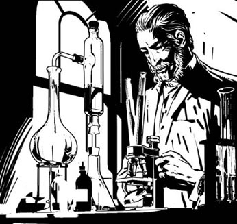
'I found ten grains of antimony.'
The antimony destroyed Charles Bravo's stomach. He died very slowly, in great pain.
But how did the antimony get into his stomach? That is the question. Antimony is a white powder. You can put very small amounts of it in a glass of wine, but it makes the wine look strange and taste awful. But if you put a lot of antimony in water, no one will notice. You can't see it or smell it or taste it. You can drink it like ordinary water. But a few minutes later, you will be very ill indeed.
Every evening, Charles Bravo drank from the bottle of water beside his bed. The antimony was probably in the bottle. But who put the antimony in the water? Charles Bravo, or someone else?
Dr Gull thought he knew. 'No one else killed Charles Bravo,' he told Florence's father, Mr Campbell. 'Your daughter didn't kill him. He killed himself.'
But Charles's stepfather, Joseph Bravo, didn't agree. 'Charles was a strong, brave young man,' he said. 'He didn't kill himself. He was murdered.'
'Nonsense,' Florence's father said. 'Who wanted to kill him?'
'Ask your daughter,' Joseph Bravo said angrily. 'And her friends, Jane Cox and James Gully. One of them knows the answer, I'm sure.'
chloroform n. a strong chemical used in the past in medicine 氯仿
laudanum n. a drug used in the past to make people feel happy 鸦片酊
enormous adj. very big 巨大的，庞大的
grain n. a very, very small amount of some medicines 格令（重量单位，约等于0.06克，用于称量药品）
医生所见
10
医生所见
查尔斯·布拉沃生病期间，不下五名医生前来诊治过。当然，研讯会上验尸官对医生们的见闻、所说的话和观点当然很感兴趣。
4月18日周二那天晚上，穆尔医生最先到达普里奥里。他上楼来到查尔斯·布拉沃的卧室。几分钟后，哈里森医生也来了。简·考克斯在前门迎接的他。
“布拉沃先生吐过几回，”她说，“我认为他服用氯仿中毒了。”
哈里森医生上楼来到卧室。穆尔医生已经在那里了，“这个人病得很重，”他说，“是中毒的症状，但我不知道中的什么毒。”
两位医生看了看房间。一张桌子上放着两个药瓶：一个上面写的是“氯仿”，另一个是“鸦片酊”。氯仿和鸦片酊都是常用药。当时许多人家里都备有这两种药——用于治疗头痛和牙痛。他们毒性不高，要大量服用才会致命。
“他现在这个样子并不是因为吃了这些药，对吧？”穆尔医生说。
“对，我也这样认为。”哈里森医生表示赞同，“他病得太重了，不像是那些药造成的。”
弗洛伦丝·布拉沃挨着床上的丈夫坐着，她正用凉水给他洗脸。
“我丈夫怎么了，医生？”她问道，“他不会死的，对吗？”
穆尔医生把手放在她胳膊上，“很遗憾，布拉沃太太。”他说，“您丈夫真的病得很重。他服下了某种可怕的毒药，可能时日不多了。”
穆尔医生说这话时，弗洛伦丝就哭了。她搂着丈夫，亲吻他。“噢，查利，求你不要死！”她哭着说，“来，查利，你必须好起来。跟我说句话——求你别抛下我！”
但查尔斯已经虚弱得说不出话来了。医生们给他服了些药，但作用并不大。弗洛伦丝看着这一切，脸上挂满泪水。“查尔斯的堂兄是医生，”她说，“就是罗伊斯·贝尔医生。他非常了解查尔斯——两位介意我请他过来吗？”
“不，不介意，”哈里森医生说，“我替您写信。”
罗伊斯·贝尔医生非常了解查尔斯·布拉沃。出事那天早上，他还在伦敦见过查尔斯，当时查尔斯看上去和平常一样开心、健康。他肯定没说起自杀的事。所以那天深夜，贝尔医生收到哈里森医生的来信时非常惊讶。
您堂弟病重，信上说，请速来，我想他是没救了。
凌晨两点时，罗伊斯·贝尔医生到达了普里奥里。他还带来了另一位医生—他的朋友乔治·约翰逊医生——一位伦敦名医。
查尔斯正躺在床上睡着。他面如死灰，呼吸沉重。贝尔医生摸了摸他的脸，他的眼睛睁开了。
“查利，”他说，“你知道我是谁吗？”
一时间查尔斯好像没听明白，又或是没有认出身边的任何人。一分钟后，他说：“知道，你是罗伊斯。”
“这位是约翰逊医生，”贝尔医生说，“我们是来帮你的，查利。你现在感觉怎么样？”
“很糟糕，”查尔斯答道，“我胃疼。让我出去！”他突然跳起来，想跑到门口，但医生们拦住了他。一分钟后，他又倒在了床上。约翰逊医生给他开了些镇痛药，几分钟后，他看上去舒服些了。
房间外面，医生们在和考克斯太太说话。“在穆尔医生到来之前，是你最先发现的布拉沃先生。”约翰逊医生说，“他当时跟你说过些什么吗？”
“嗯，”考克斯太太说，“他说，‘我服了些那种毒药，别告诉弗洛伦丝。’”
“他跟你说了是什么毒药吗？”
“没有，”考克斯太太答道，“他只说了那句话。”
哈里森医生听到此话便暴跳如雷。“你为什么不早告诉我？”他问道，“你说他服用的是氯仿，不是毒药。”
几位医生回到查尔斯的卧室，“查利，你服毒了吗？”约翰逊医生问道。
“我用鸦片酊擦了擦牙，也许我误服了一点儿。”查尔斯回答说。
“鸦片酊不会让你病得这么重。”
“嗯，如果不是鸦片酊，那我就不知道是什么了。”查尔斯说道。
这时，弗洛伦丝走了进来。她脸上挂着泪珠，看上去非常疲惫。查尔斯向她伸出双手，“亲我一下，老婆。”他说。弗洛伦丝来到床前亲吻了他。然后她在查尔斯身边躺下来，用手指轻抚他的脸庞。两名医生看着这一切。
“看我给你带来了多少麻烦呀，弗洛丽。”查尔斯说，“再亲我一下。你是天底下最好的妻子。”
“噢，查利！”弗洛伦丝叫道，“你这是怎么了？你吃了什么，病得这样重？”
查尔斯没有说话。“啊，上帝帮帮我！”他痛苦地尖叫道。接着他转向他的堂兄，问：“罗伊斯，我会好起来吗？”
“但愿如此，但是查利，你的确病得不轻。”
听贝尔医生这么说，查尔斯看上去吓坏了。“罗伊斯，”他说，“我死之前，我想让你帮我写点儿东西，行吗？”
贝尔医生记下了查尔斯·布拉沃的话：我把我拥有的一切都留给我的妻子，弗洛伦丝·布拉沃。
查尔斯坐起来签了字，并和贝尔医生一起做了祷告。然后，他说：“我死后，罗伊斯，替我照顾弗洛伦丝，好吗？她是天底下最好的妻子。”
在七月份的验尸庭研讯会上，一些律师说是弗洛伦丝杀害了她的丈夫。但查尔斯的堂兄罗伊斯·贝尔医生不信，他告诉那些律师查尔斯爱他的妻子，并且把一切都留给了弗洛伦丝。那天晚上弗洛伦丝看到丈夫病得如此严重时，她也非常非常伤心。她请了四名医生——穆尔医生、哈里森医生、贝尔医生和约翰逊医生。4月20日星期四那天，她还派人请来了第五位医生，威廉·古尔医生。
古尔医生非常有名，也非常权威，是维多利亚女王的御用医生。星期四晚上六点，他到达了普里奥里。查尔斯·布拉沃还活着，但病得很重。
“布拉沃先生，你服用了毒药，”古尔医生跟他说，“请告诉我，谁给你的毒药？”
“我自己吃的。”查尔斯·布拉沃说。
“你吃的什么？”古尔医生问道。
“鸦片酊，”查尔斯·布拉沃回答说，“我吃了些鸦片酊，因为我牙疼。”
“一点儿鸦片酊不会要你的命，布拉沃先生。”古尔医生说，“你还吃了什么？”
“没了。只吃了鸦片酊，医生，就是这样。”
“布拉沃先生，听我说。你病得不轻，现在差不多已经到鬼门关了，赶紧跟我说实话。你吃了什么毒药？如果是别人给你的，他们就是想害你。你明白吗？”
查尔斯·布拉沃缓缓地摇了摇头，“我真的只吃了鸦片酊，医生。”他说，“不是别人给我的，是我自己吃的。”
这就是查尔斯对古尔医生说的最后一句话。几个小时后，查尔斯·布拉沃离开了人世。来了五位医生为他诊治，而查尔斯跟他们每个人说的话都是一样的。他服下了鸦片酊，他说，然后就要了热水让自己呕吐。
“他吐在哪儿了？”古尔医生问道。
“吐在了窗外。”约翰逊医生说，“看，就在那儿。”他用一把银勺子从房顶上取下一些呕吐物，然后把它放进一个玻璃瓶中。古尔医生叫人把它送到雷德伍德教授那里。雷德伍德教授是伦敦著名的科学家，他仔细查看了呕吐物。
“毒药是锑。”教授后来告诉验尸官说，“我从玻璃瓶中的呕吐物里发现了10格令锑。他体内大约有30格令锑，这些锑就是害死查尔斯的元凶。”
锑毁了查尔斯·布拉沃的胃。他没有立即死去，而是被慢慢地折磨至死。
但锑是如何进到他胃中的呢？这是问题所在。锑是一种白色粉末。你可以往一杯酒里放入一点儿，可这会让酒看上去很奇怪，也很难喝。但如果你把大量的锑放入水中，却没有人会发现。你看不出、闻不出，也尝不出来。你可能会把它当成普通的水一样喝下去。但几分钟后，你就会非常难受。
每天晚上，查尔斯·布拉沃都会喝他床边的那瓶水。锑可能就放在那瓶水中了。但是谁把锑放在水中的呢？是查尔斯·布拉沃自己，还是别的什么人？
古尔医生以为自己知道了答案。“没有杀人凶手。”他跟弗洛伦丝的父亲坎贝尔先生说，“不是您女儿害死他的，他是自杀的。”
但查尔斯的继父约瑟夫·布拉沃不同意这种说法。“查尔斯是个坚强勇敢的年轻人，”他说，“他没有自杀。他是被人害死的。”
“胡说，”弗洛伦丝的父亲说，“谁想害死他呢？”
“问问您女儿，”约瑟夫·布拉沃气愤地说，“还有她的朋友，简·考克斯和詹姆斯·格利。他们当中有人知道答案，我敢肯定。”
11．The mystery
11
The mystery
Did Charles Bravo kill himself, or was he murdered? After listening to everyone's story, the Coroner came to a decision.
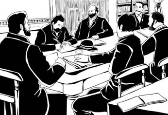
"After listening to everyone's story, the Coroner came to a decision."
The Times
Friday 11th August 1876
Charles Bravo Murdered!
Yesterday the Coroner read out this decision: 'Mr Charles Bravo did not commit suicide and he did not die by accident. He was murdered with the poison antimony. But it is impossible to say which person – or persons – killed him.'
But was the Coroner right? And if so, who killed Charles Bravo? Over the years since 1876, many books and television programmes have asked these questions. But they have all given different answers.
The police learnt that the coachman, George Griffiths, was in Kent when Charles Bravo died, and his new employer said that was true. So Griffiths was not the murderer, but was he telling the truth when he said there was no antimony left in the stables? Perhaps there was some antimony left there – and someone found it, and used it. Or perhaps the antimony didn't come from the stables at all.
Here are the four main possible answers to the mystery.
First possible answer: Charles Bravo killed himself
It is difficult to believe that Charles Bravo meant to kill himself. Why would he do that? He was young and healthy, he seemed happy, he had a rich wife – he had every reason to live. And to die from antimony is a very painful, horrible death.
But perhaps he killed himself by accident. Is that possible? Think about it. Charles Bravo was not a very nice man. He married Florence for her money, not because he loved her. He hit her when she argued with him. She drank a lot of wine, and he didn't like that. Maybe he found the antimony in the stables, and put a little in her wine, to stop her drinking. After all, Florence did that to her first husband.
If he was using antimony in this way, perhaps he put some antimony in his water bottle by mistake; then forgot about it, and later drank from the bottle when he was thirsty.
Mrs Cox said he told her: 'I have taken some of that poison.' Did he really say that? And did Mrs Cox know which poison he was talking about? Probably not. She told Dr Harrison he had taken chloroform.
But then, if Charles knew he had taken antimony by mistake, why didn't he tell the doctors about it? 'I only took laudanum, nothing else,' he told them. And laudanum didn't kill him.
Second possible answer: Dr Gully killed Charles Bravo
Dr Gully loved Florence. He wanted to marry her. He hated Charles Bravo, and he was worried and angry when Jane Cox told him that Charles sometimes hit Florence. Did Dr Gully write that letter to Charles Bravo saying: 'You don't love her. You just wanted her money, that's all.' ? Charles Bravo certainly thought so.
Dr Gully certainly wrote to Mrs Cox, and sent her medicine for her mother. He was a doctor, he could easily buy antimony if he wanted. And maybe he thought: 'If Charles Bravo is dead, then Florence will come back to me.'
But then, how could he get into the house, and into Charles Bravo's bedroom, to put the poison in the water bottle? No one saw him there; he hadn't been inside the house for months. But perhaps he did buy the antimony. And perhaps another person put it in the water bottle. Jane Cox, perhaps? Or Florence?
Dr Gully lived until 1882. The last years of his life were unhappy. No other doctors would speak to him or read his books. He didn't spend much time with Florence, either. She wasn't interested in him any more.
Third possible answer: Jane Cox killed Charles Bravo
Jane Cox was Florence's companion and her friend. She knew and liked Dr Gully but she thought he was too old for Florence. So she introduced her to a younger man, Charles Bravo.
At first she thought Charles was a good husband for Florence, but she soon changed her mind. He was angry and unkind; he hit Florence when she argued with him. He got rid of many servants, and he tried to get rid of Jane Cox, too. So Jane Cox would lose her friend, and her job. She had three sons at school – how would she pay for them?
Mrs Cox knew Charles Bravo drank from his water bottle every night. She could easily go into his bedroom and put antimony in the bottle.
There are many questions about Jane Cox.
When Charles opened his bedroom door, shouting for hot water, why didn't Mrs Cox come out? She wasn't asleep. But she did nothing until the maid, Mary Ann, came to fetch her. And then, when she went into Charles's bedroom, she sent Mary Ann out, again and again. Why? Because she wanted to be alone with Charles, perhaps? What did she do when she was alone with him? Give him more poison, perhaps? Burn the rest of the antimony on the fire? Clean out the water bottle, to make sure there were no grains of antimony left inside?
Why did she send for Dr Harrison, when Dr Moore lived much closer? Was she telling the truth, about what Charles said to her?
Some people say that Mrs Cox did it, because she was afraid of losing her job. She was a poor widow and needed the money.
But there is a problem with this, too. Jane Cox's aunt, who lived in Jamaica, was very rich. And her aunt was dying. A month before Charles Bravo died, this rich aunt had left all her money to Mrs Cox's sons.
So Jane Cox didn't really need a job any more. And after Charles's death, she stopped working for Florence. She took her sons to Jamaica, and lived in a big house there. She was a rich lady, and died in 1917, aged ninety.
Perhaps she did kill Charles Bravo. But she didn't do it for the money.
Fourth possible answer: Florence killed Charles Bravo
Florence's first husband, Alexander Ricardo, died because he drank too much. Before she left him, Florence tried to stop him drinking by putting small amounts of antimony in his wine, to make him sick.
Florence was a very rich young woman. She had a fine house, with lots of servants and horses. She liked to do things her own way. But she lived at a time when men told women what to do. When a man married a woman, all her money belonged to him. If a wife argued with her husband, the husband often hit her.
When Alexander hit her, Florence ran away, to Dr Gully. Dr Gully was the only man in her life who was kind to her. But she couldn't marry him, because he was too old and his wife was still alive. So she married Charles Bravo instead.
She was only married to Charles for five months. They had many arguments, and he often hit her. He sold her horses; he got rid of her coachman, George Griffiths. They argued about money, they argued about servants, they argued about her drinking. She lost her baby, and he tried to get rid of her friend, Jane Cox. Florence had many reasons to hate him.
Was she really asleep, when he drank the poison? Charles shouted for help outside her bedroom, but she didn't hear him. She lay in bed with her eyes closed.
Did she find some antimony in the stables? Did she put the antimony into his water bottle?
But then, when she woke up, she tried hard to save him. She sent for five different doctors. All the doctors thought she was very upset. And Charles didn't think she had killed him. 'You've been the best of wives,' he said. His cousin, Dr Royes Bell, heard him. Charles left all his money to her.
After the enquiry, Florence Bravo left The Priory and went to live in Southsea, on the south coast of England. Her brother invited her to start a new life with him in Australia, but she refused. In Southsea she was lonely and unhappy. She didn't talk to Jane Cox or Dr Gully. She drank more and more wine every day. In September 1878, two years after her husband's death, she died. She had killed herself by drinking so much alcohol. She was thirty-three years old.
So did she love her husband, or did she kill him?
No one knows.
疑点
11
疑点
查尔斯·布拉沃是自杀还是他杀？听了以上各位的讲述，验尸官作出了结论。
《泰晤士报》
1876年8月11日，星期五
查尔斯·布拉沃遇害！
昨天验尸官宣读了这一结论：查尔斯·布拉沃先生不是自杀，也不是意外死亡。他是被锑毒死的。但是有关于是哪个人或哪些人杀害了他，还尚无定论。
但是验尸官的结论正确吗？如果是正确的，那是谁害死了查尔斯·布拉沃呢？1876年以来的这些年里，许多书和电视节目都提出了这些问题，但他们都给出了不同的答案。
警方得知，查尔斯·布拉沃去世时马车夫乔治·格里菲思人在肯特。对此，乔治的新雇主可以作证。因此，格里菲思不可能杀人。但他说马厩里没剩下锑是不是实话呢？也许马厩里还剩下了一点儿锑——有人发现了它，并把它派上了用场。也或许，那些锑根本就不来自于马厩。
下面是对查尔斯·布拉沃离奇死亡的四种主要可能性解释：
第一种可能性解释：查尔斯·布拉沃自杀说
很难让人相信，查尔斯·布拉沃是有意要自杀的。他为什么要自杀呢？他年轻，健康，看上去很快乐，还有个富有的妻子——他完全没有理由自杀。而且，锑中毒而死是一个非常痛苦而可怕的死法。
不过，也许是他不小心误伤了自己。这可能吗？想想看。查尔斯·布拉沃不是一个非常和善的人。他娶弗洛伦丝是因为看上了她的钱，而不是爱她。当她跟他争辩时，他还打她。弗洛伦丝爱喝酒，他不喜欢这一点。也许他在马厩里发现了锑，就放了一点儿在她的酒里，以阻止她喝酒。毕竟，弗洛伦丝对她的首任丈夫也这样干过。
如果他这样使用锑，也许他就误把一些锑放进了自己的水瓶里，然后就忘了这件事，后来他口渴时，就喝下了水瓶中的水。
考克斯太太说查尔斯告诉她，“我服了些那种毒药。”他真的说过这话吗？考克斯太太知道他指的是哪种毒药吗？很可能不知道。她告诉哈里森医生说他服了氯仿。
但是，如果当时查尔斯知道自己误服了锑，他为什么不告诉医生呢？“我只吃了鸦片酊，没吃别的。”他跟几个医生这样说，而鸦片酊是不足以致命的。
第二种可能性解释：格利医生害人说
格利医生爱弗洛伦丝。他想要娶她。他恨查尔斯·布拉沃，当简·考克斯告诉他说查尔斯有时会打弗洛伦丝时，他又急又怒。那封写给查尔斯·布拉沃，写有“你不爱她，你就是想要她的钱，仅此而已。”的信是格利医生写的吗？查尔斯·布拉沃肯定是这样想的。
当然，格利医生给考克斯太太写过信，还把给她母亲治病的药寄给了她。他是医生，如果他需要锑，他很轻易就能买得到。也许格利医生是这样想的：“如果查尔斯·布拉沃死了，弗洛伦丝就会回到我身边。”
但是，格利医生怎么能进入房子，走进查尔斯·布拉沃的卧室，并把毒药放入水瓶中呢？没有人在现场看到他，他已经有几个月都不去他们家了。但也许他确实买了些锑，然后是另一个人把锑倒进了水瓶中。可能是简·考克斯？抑或是弗洛伦丝？
格利医生于1882年去世。他在世的最后几年过得并不开心。没有医生愿意跟他说话，愿意看他写的书。他与弗洛伦丝呆在一起的时间也不多。她已不再对他感兴趣了。
第三种可能性解释：简·考克斯害人说
简·考克斯是弗洛伦丝的陪护兼朋友。她认识格利医生，也很喜欢他。但她觉得格利医生年纪太大了，配不上弗洛伦丝。所以，她把弗洛伦丝介绍给了更年轻的查尔斯·布拉沃。
一开始，她以为查尔斯会是弗洛伦丝的如意郎君，但很快她就改变了看法。查尔斯脾气暴躁，人也不和善，弗洛伦丝和他争辩时还打她。他解雇了很多仆人，连简·考克斯也想撵走。这样简·考克斯不仅会没了朋友，还会丢了工作。她有三个儿子在念书——她哪来钱养他们呢？
考克斯太太知道，查尔斯·布拉沃每天晚上都会喝水瓶中的水。她能轻易地进入他的卧室，并把锑放到水瓶中。
简·考克斯有很多疑点。
查尔斯打开卧室房门，喊着要热水时，考克斯太太为什么没有出来？她并没有睡着。直到女仆玛丽·安来叫她，她才去帮忙。后来当她走进查尔斯的卧室时，她一次一次地把玛丽·安支出卧室。这是为什么？也许是因为她想和查尔斯单独呆在一起？当她和查尔斯单独呆在卧室时，她又做了些什么？也许给了他更多的毒药？或者把剩下的锑都丢进炉子里烧掉了？或者清洗干净水瓶，以确保里面没有剩下一点儿锑？
她为什么要叫人去请哈里森医生，而不是住得近很多的穆尔医生？她把查尔斯跟她讲的话如实转述了吗？
一些人认为是考克斯太太害了查尔斯，因为她害怕丢了工作。她是一个穷寡妇，需要工作来养家糊口。
但这其中也有说不通的地方。简·考克斯有一个姑姑住在牙买加，她非常富有，而且身体已经不行了。在查尔斯·布拉沃去世前的一个月，这位富有的姑姑就把她所有的钱都留给了考克斯太太的儿子们。
因此，简·考克斯实际上没必要再工作了。查尔斯去世后，她就不再为弗洛伦丝工作了。她带着三个儿子去了牙买加，住进了当地的一所大宅子。她成了一位富有的夫人，之后于1917年去世，享年90岁。
也许是她毒死了查尔斯·布拉沃，但她这么做肯定不是为了钱。
第四种可能性解释：弗洛伦丝害人说
弗洛伦丝的首任丈夫，亚历山大·里卡多，就是因为酗酒而死的。但在弗洛伦丝离开亚历山大之前，曾经在他的酒里放过少量的锑使他呕吐，想以此来让他戒酒。
弗洛伦丝是一个年轻富有的女人。她有一幢漂亮的房子、一大堆仆人和一大群马匹。她喜欢按自己的方式行事。但她生活的时代却要求女人对男人唯命是从。当一个男人娶妻后，妻子的一切财产都归丈夫所有。一旦妻子和丈夫发生口角，做丈夫的还常常打妻子。
当亚历山大打弗洛伦丝时，她跑了，跑到了格利医生那里。格利医生是弗洛伦丝一生中唯一对她好的男人。但是她不能嫁给他，因为他年纪太大了，而且他老婆还健在。所以，弗洛伦丝嫁给了查尔斯·布拉沃。
她和查尔斯结婚仅五个月。他们经常吵架，查尔斯还经常对她拳脚相向。他卖了她的马，赶走了她的马车夫乔治·格里菲思。他们为钱争吵，为仆人争吵，为弗洛伦丝喝酒争吵。弗洛伦丝流产了，而查尔斯还要解雇她的朋友简·考克斯。弗洛伦丝恨他也是情理之中的事。
查尔斯喝下毒药时，弗洛伦丝真的睡着了吗？查尔斯在她卧室外大喊救命，她却没有听见。她闭着眼睛躺在床上。
她在马厩里找到锑了吗？是弗洛伦丝把锑放入他的水瓶中的吗？
但是，当她醒来时，她努力想挽救他的性命。她叫人请来了五名医生。所有医生都认为她非常伤心。查尔斯也认为不是弗洛伦丝害的他。你是天底下最好的妻子。”他说。他的堂兄罗伊斯·贝尔医生听到了这番话。查尔斯把所有钱财都留给了弗洛伦丝。
研讯会后，弗洛伦丝·布拉沃离开普里奥里，来到了英格兰南部沿海的南海定居。弗洛伦丝的弟弟邀请她一起去澳大利亚开始新的生活，但她拒绝了。在南海，她很孤独，郁郁寡欢。她既不和简·考克斯联系，也不和格利医生联系。她每天都喝酒，一天比一天喝得多。1878年9月，在丈夫去世两年后，弗洛伦丝也离开了人世。她是因酗酒而死的，死时年仅33岁。
那么，弗洛伦丝是爱自己的丈夫呢，还是杀害了自己的丈夫呢？
没有人知道。
ACTIVITIES: Before Reading
ACTIVITIES
Before Reading
1 Read the story introduction and the back cover of the book. How much do you know now about the story? Choose T (True) or NT(Not True) for each sentence.
1) In Queen Victoria's time, husbands could tell their wives what to do.
2) Florence's lover was nicer to her than her first husband was.
3) The doctors did not know what killed Charles Bravo.
4) Everybody knew who had killed Charles Bravo.
5) Florence met Dr Gully before she married Charles Bravo.
6) Nobody had any reason for wanting to kill Charles Bravo.
2 Do you agree (A), slightly disagree (S), or strongly disagree (D) with these ideas?
1) Women should leave their husbands if they are cruel.
2) It is right for women to obey their husbands in everything.
3) If it is all right for a husband to beat a wife, then it must also be all right for a wife to beat a husband.
4) If a husband is not kind to his wife, she should ask her friends to help her.
5) It is always wrong to murder somebody.
ACTIVITIES: While Reading
ACTIVITIES
While Reading
As you read this book, and the different stories told by Florence Bravo, Dr Gully, and Jane Cox, stop at the places listed below. Before you read on, think about the big question in this story.
Read Chapters 1 to 3, and then think about this ...
· Who killed Charles Bravo? What do you think at this point in the story?
Read Chapters 4 and 5, and then think about this ...
· Who killed Charles Bravo? Has your opinion changed? Why, or why not?
Read Chapters 6 and 7, and then think about this ...
· Who killed Charles Bravo? Are you more sure, or less sure, than before? Did more than one person do it?
If yes, which people did it?
Read Chapter 8, and then think about this ...
· Who killed Charles Bravo? What has changed now?
Is there anything suspicious in Florence's story?
Read Chapter 9, and then think about this ...
· Who killed Charles Bravo? Do you expect to learn anything new from the doctors, or have you made up your mind? Who is the most probable killer, and who is the least probable killer, in your opinion?
ACTIVITIES: After Reading
ACTIVITIES
After Reading
1 So who killed Charles Bravo? Was it murder, or did he kill himself by accident? What do you think? Write three or four sentences to explain your ideas.
2 Fill in the gaps with names, and match the parts of sentences together. Then choose the best linking words to join them.
Charles Bravo / Florence Bravo / Jane Cox / Dr Gully / Mary Ann Keeber / Alexander Ricardo
1) _____ wanted to marry Florence ...
2) _____ did not want to leave her job ...
3) _____ wanted Florence's money for himself ...
4) _____ started drinking a lot ...
5) _____ put the bottle of drinking water in Charles Bravo's room every night ...
6) _____ thought that at last she had found the perfect husband ...
7) when / because she thought Charles would hit Florence again.
8) but / so she had no reason to kill him.
9) when / until she met Charles Bravo.
10) because / but he had a wife already.
11) after / so he left the army.
12) and / so he got rid of three horses and two gardeners.
3 Perhaps this is what some of the other characters in this story think about the Bravos. Which characters are they?
1) 'I wasn't sad when I heard the news. I liked working for her, because she cared about the horses. But him! He only cared about money, and he didn't listen to anybody. I didn't kill him, but I'm not surprised that he's dead ...'
2) 'I was halfway down the stairs when Mr Bravo opened his door and started shouting for hot water. Why didn't Mrs Bravo or Mrs Cox hear him? He shouted loudly enough. I think it's very strange that they didn't hear him ...'
3) 'I liked working at The Priory. Mrs Ricardo was a beautiful, kind lady, and she liked to talk about the flowers in her garden, and about my family. And then suddenly, after the wedding, I had to look for a new job. Well, it's the husband's job to decide about these things. But I know this – she was happier before she married him ...'
4) 'Something very strange happened, I'm sure of that. He was a healthy young man when he lived with us, and I liked him very much. He was like a son to me. Why did he die? I think Florence knows something about it. She's lost two husbands – that's not good. Perhaps Jane Cox helped her. I don't think he killed himself – and his mother doesn't think so either ...'
5) 'He was happy and well when I saw him earlier that day. He wasn't thinking about suicide. I'm sure that he loved Florence – he called her 'the best of wives'. Those were his actual words to me that night. And she loved him too ...'
4 There are 20 words from the story in this word search. Find the words (they go from left to right, and from top to bottom) and draw lines through them. The words are 4 letters or longer, and there is one plural noun.
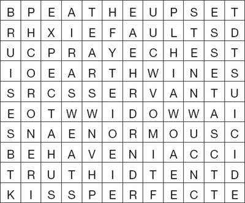
Now look at the word search again, and write down all the letters without a line through them. Begin with the first line, and go across each line to the end. You should have 21 letters, which will make a sentence of 5 words.
1) What is the hidden sentence?
2) Do you agree with it? Explain why you agree, or don't agree.
5 Imagine that Florence was tried for murder. Here are two speeches by the lawyers; the first says that Florence did murder Charles, the second says that she did not. Choose one suitable word to fill each gap. Which lawyer do you believe?
1) 'Florence Bravo is a _____. She thought that Charles would be the _____ husband. But when she _____ out that she was_____, she decided to kill him. She had used _____ before, when she tried to stop her _____ husband from drinking. And she was friendly with her _____, George Griffiths, who_____ antimony in the stables. Of _____ she sent for a lot of doctors. She _____ everybody to think that she _____ Charles and wanted him to live. But really she wanted to get _____ of him.'
2) '_____ would Florence kill Charles? He was young and handsome, and she _____ being with him. Of course they_____ sometimes – but lots of husbands and _____ argue, and they don't kill _____ other! Florence got upset easily, that's all. Florence wanted to have _____, and she could not do that _____ Charles. Other _____ hated Charles, and it is not difficult to get antimony. No, Charles _____ she was the _____ of wives, and he was right.'
6 What did you think about the people in this story? Fill in names where needed, and complete these sentences in your own words.
1) I felt sorry for _____ because ________.
2) I think _____ was the luckiest person because ________.
3) I think _____ was right to ________.
4) I think _____ was wrong to ________.
5) I liked _____ because ________.
6) I didn't like _____ because ________.
7) I think the strangest part of the story is when ________.
封底
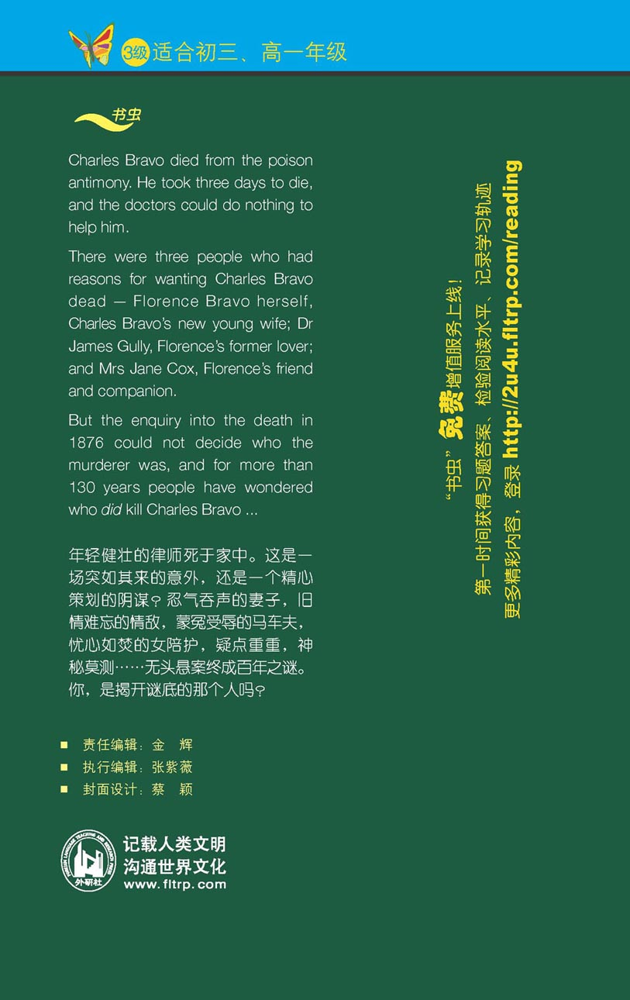